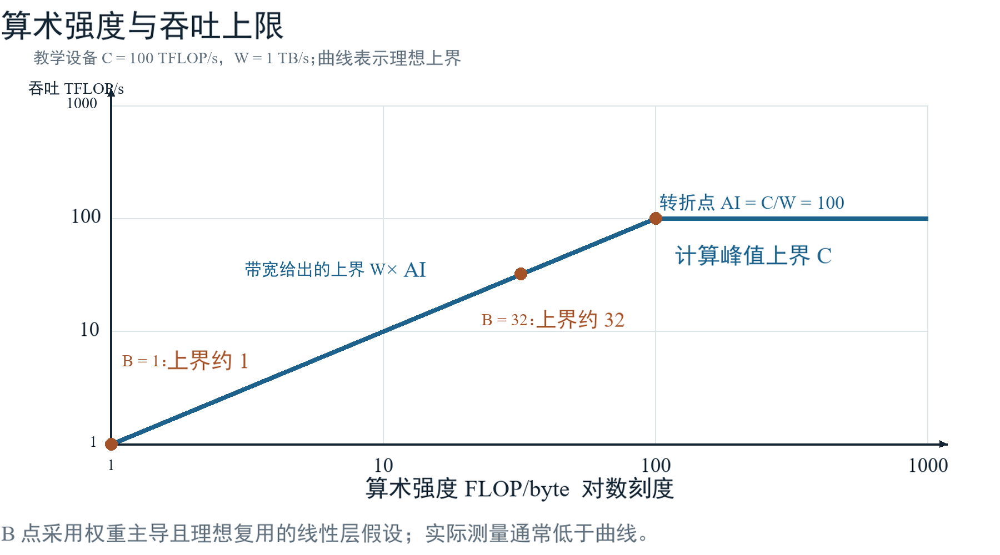

源码仓库与版本：vllm-project/vllm。本课使用固定提交的源码，a57493939408。代码展示仅在需要时移除统一的外层缩进，保留所有原始语句、空行和行号；就近链接指向该固定版本。
1 Token ID、词嵌入与隐藏状态
文档问答服务先处理用户问题和检索到的资料，再逐个生成答案。在 vLLM 中，输入先转换成 token ID，经过词嵌入和 decoder 层后得到词表分数。下文用一个小矩阵演算这段过程，实际实现见各节的源码链接。
token 是 tokenizer 按自身词表和分词规则得到的单位。一个英文单词可能拆成多个 token，一个汉字也未必恰好占一个 token；空格、标点、代码片段和特殊控制符同样可能影响分词结果。模型通常先收到一串整数 ID，例如 [0,1,2]。这些整数标识词表中的条目，ID 之间的大小关系没有语义距离的含义。ID 为 200 的 token 不会因为数值较大，就比 ID 为 100 的 token 表达两倍的信息。
为了能够手算，下面另设一个只有四个条目的教学词表，把条目记作甲、乙、丙、丁，ID 依次为 0、1、2、3。这只是人为规定的四条记录，不声称真实 tokenizer 会按这些汉字逐字切分。模型为每个 ID 存放一个向量，所有向量按行堆成 embedding 表 E。本例每个向量有四个数，因此词表大小为 4，隐藏宽度 D=4，E 的形状为 [4,4]。两个 4 在本例碰巧相同，含义各不相同；真实模型可以有十几万个词表条目，而每个向量只有几千维。
| token ID | 教学条目 | embedding 向量，共 D=4 个分量 |
|---|---|---|
| 0 | 甲 | [1, 0, 1, 1] |
| 1 | 乙 | [0, 1, 1, 0] |
| 2 | 丙 | [1, 1, 0, 1] |
| 3 | 丁 | [0, 0, 1, 0] |
输入 ID 为 [0,1,2] 时，embedding 查表依次取出 E 的第 0、1、2 行，得到三行浮点数。原来每个位置只有一个整数，现在每个位置有一个四维向量。查表不会把整张词表与每个 token 做一次密集矩阵乘；虽然可以用 one-hot 向量乘 E 写出等价数学式，实际查表只需要取得被选中的行。这个区别会直接影响后面计算 FLOPs 的口径。
hidden state 指模型在某一位置、某一处理阶段保存的特征向量。进入第一层前，它可以是该 token 的 embedding；经过 attention 和 MLP 后，向量已经包含前文信息，仍然称为 hidden state。hidden 表示模型内部的表示，dim 或 dimension 表示向量分量的个数。D=4096 表示每个位置有 4096 个数，不表示输入有 4096 个 token，也不表示模型用了 4096 张 GPU。单个分量通常没有预先指定的“主语”“时间”之类名称，特征由训练共同形成。
若同时处理 B 条等长序列，每条当前长度为 S，则 hidden states 的逻辑形状写成 [B,S,D]。X[b,s,j] 取出第 b 条请求、第 s 个位置、第 j 个特征分量。B=2、S=3、D=4 时，一共有 24 个浮点数；S 增大意味着每条请求多出若干行，D 增大意味着每行变宽。后面有些公式把 [B,S,D] 展开成 [BS,D]，只是把请求与位置合并成行索引。矩阵乘可以逐行使用同一组权重，但 attention 仍需知道每行属于哪条请求，不能让不同用户的上下文混在一起。
同一个 ID 在 embedding 查表阶段通常取得同一行；同一个词出现在两篇不同资料里，经过上下文处理后的 hidden state 可以不同。模型参数决定查表和各层如何变换向量，请求内容决定这一次产生哪些激活值。参数与激活的区分从这里就出现了：E 是模型的一部分，X 是本次请求取出来并继续加工的数据。更换请求通常改变 X；在普通推理期间，E 以及后面的投影权重保持固定。
代码 1 vLLM 的 embedding 构造：LlamaModel.__init__ 中的真实片段
self.embed_tokens = VocabParallelEmbedding(
self.vocab_size,
config.hidden_size,
quant_config=quant_config,
)self.vocab_size 决定词表这一维，config.hidden_size 决定每个 token 向量的宽度。两者分别对应数学记号“词表大小”和 D，不能互换。
VocabParallelEmbedding 是引擎中的 embedding 层类型。先按单卡阅读：输入 ID 会选择相应的权重行；类名中的 Parallel 对应分布式能力，本节无需引入多卡分片公式。
quant_config 是构造时传给该层的量化配置。本节的小算例用普通实数解释运算，不能仅因看到这个参数就断言运行时一定采用了某种低精度。
本课源码来自实际克隆的 vLLM 仓库，固定提交为 a574939394086ae79be77f7c67dd32979249a40c。引文归属 vLLM 项目贡献者，遵循源文件标明的 Apache-2.0 许可；llama.py 还保留了其上游改编归属。后文每个代码块按这一快照的真实行号提取。数学例子刻意缩小维度，源码则展示生产实现怎样组织同类运算，两者之间的简化条件会逐一说明。
做一次自检：把刚才输入的三个 token 重复成六个 token，embedding 表会随请求复制一份吗？答案是不会。表仍为 [4,4]，取得的输入激活由 [3,4] 变成 [6,4]。若某个 tokenizer 的 ID 被错误地送给另一套模型词表，即使 ID 未越界而程序能运行，查出的向量也可能对应错误条目。接入问题不能只检查张量形状，还要保证 tokenizer 与模型词表一致。
批处理常把两条请求的 token 摊成连续行。若 A 有 2 个词、B 有 3 个词，可用长度前缀和 [0,2,5] 标出各自区间。全局第 2 行是 B 的第 0 个词，不能因为行号更大就让它看到 A。查词嵌入只需 token ID，后续因果掩码还要用请求边界及各自的逻辑位置。
↑ 返回知识点目录2 线性投影与 Q、K、V
embedding 向量只是起点。模型要从当前特征中提取适合不同计算任务的表示，最基本的工具是线性层。将一行四维输入 x 与一个 [4,2] 权重矩阵 W 相乘，会产生两个输出分量。W 的每一列给出一种加权组合方式：输出的第一个数由输入四个分量按第一列加权相加，第二个数使用第二列。输入有多少行，就把同样的组合规则应用多少次。
第一行 x=[1,0,1,1] 的第一个输出是 1×1+0×0+1×1+1×0=2；第二个输出是 1×0+0×1+1×1+1×(−1)=0。第二行 [0,1,1,0] 得到 [1,2]，第三行 [1,1,0,1] 得到 [1,0]。这张 W 只有八个参数，三个 token 都复用它。每个输出需要四次乘法和三次加法，换成更多行只增加应用次数，不会为每行产生新的权重。
线性层里的“线性”对应这一组乘加关系。负权重允许一个特征抵消另一个特征，输出分量也可以为负。实际权重由训练得到，通常没有这样整齐的整数。若使用 bias，还会在每行的输出上加同一个偏置向量；本课主要算例省略 bias，以便把维度和依赖看清楚。数学上把 W 写为 [输入宽度,输出宽度]，框架内部可能以转置布局存储，阅读真实权重形状时要看该接口如何定义。
attention 需要回答两个连在一起的问题：当前位置应从哪些已有位置取得信息，以及从每个位置取得什么内容。Query 即 Q，由当前要更新的位置发出，用于匹配；Key 即 K，是各个可被访问位置提供的匹配表示；Value 即 V，是匹配权重最终要组合的内容表示。可以把 Q 和 K 理解为决定联系强弱的两端，把 V 理解为沿这些联系传递的向量。这是一种功能分工，模型没有事先把某一维标成固定的人类语义标签。
同一份输入 X 经过三组投影，得到 Q = XWQ、K = XWK、V = XWV。对位置 i，用 qi 与每个允许访问的 kj 求点积，再按键向量维度的平方根缩放。对这一行的合法位置做 softmax 后，以归一化权重加权求和 vj。交换 i 和 j 时，参与点积的投影与可见范围都可能改变。
多头 attention 会给每个 token 生成 H 份 query，每份宽度为 d。先用常见配置 D=H·d：例如 D=4096、H=32、d=128。把一行投影结果的 4096 个数分成 32 组，每组 128 个数，就是 32 个 query head。head 是向量内部的一组通道和对应的匹配运算，不表示把输入序列切成 32 段。每个 head 都可以看到这条请求允许访问的全部位置。
先学习 H 个 Q 头与 H 个 KV 头一一对应的多头注意力 MHA。此时三张投影矩阵均为 [D,Hd]，在 D=Hd 的条件下就是 [D,D]。稍后学习 GQA 时，只改变 K/V 的头数，query 的头数仍为 H。把三次投影融合成一次大投影，是把三组输出列排在一起：融合权重可写成 [WQ | WK | WV]。这会改变执行组织，却没有把 Q、K、V 变成同一组特征。
代码 2 vLLM 的 head 宽度与 QKV 投影构造
head_dim = getattr(config, "head_dim", None)
self.head_dim = head_dim or self.hidden_size // self.total_num_heads
self.q_size = self.num_heads * self.head_dim
self.kv_size = self.num_kv_heads * self.head_dim
self.scaling = self.head_dim**-0.5
self.max_position_embeddings = max_position_embeddings
self.qkv_proj = QKVParallelLinear(
hidden_size=hidden_size,
head_size=self.head_dim,
total_num_heads=self.total_num_heads,
total_num_kv_heads=self.total_num_kv_heads,
bias=bias,
quant_config=quant_config,
prefix=f"{prefix}.qkv_proj",
)158–159 行优先读取配置中显式给出的 head_dim；未给出时才按 hidden_size 除以总 query 头数推导。因此 D=Hd 是本课所选配置的条件，不能强加给所有模型。
160–162 行分别计算 Q 的宽度、单个 K 或 V 的宽度以及 1/√d 缩放系数。先设张量并行规模为 1，self.num_heads 与 self.num_kv_heads 就是当前讲解的 H 与 Hkv。
165–173 行创建融合的 QKVParallelLinear，传入 hidden_size、head_size 和两类总头数。投影读入每行 D 个数，输出的三个区段稍后会按 q_size、kv_size、kv_size 拆开。
接下来的完整手算采用 B=1、S=3、D=4、H=2、d=2，仍使用上一节的 X。为了把后续每个数字都算清楚，暂取 WQ=WK=WV=Id₄，其中 Id₄ 表示四阶单位矩阵，后文的 I 专门表示 MLP 中间宽度。此时暂不加入位置旋转、归一化和残差，因此 Q=K=V=X。这里三组结果相同，是人为选取单位矩阵的结果；实际模型拥有不同的已训练权重。这个小实验只隔离 attention 核心计算，后面会把完整 decoder 的外层结构接回去。
可先停下来检查两句话。“每个 token 有自己的 WQ”会把共享参数误认为请求数据；“同一段输入生成 QKV，所以 Q=K=V”忽略了三张不同的权重。正确理解分别是：同一层所有位置共享该层的 WQ；只有本例把三组权重都设为单位矩阵，才得到相同数值。每一层又有自己的一套权重，不能把跨位置共享理解成所有层共用一张矩阵。
即使输入序列相同，QK 打分也可有方向。若某头的两个 query 是 [1,0]、[0,2]，两个 key 是 [1,1]、[3,0]，则位置 0 问位置 1 的点积为 3，反过来是 2。两侧用了不同的内容投影；随后的因果掩码还会单独决定哪个方向可见。
↑ 返回知识点目录3 三个 token 的注意力计算
先取第 0 个 head，也就是 Q、K、V 每行的前两个分量。三行分别为 [1,0]、[0,1]、[1,1]。当前 head 的 Q、K、V 都是 [3,2]；Q 乘 K 的转置，形状为 [3,2]×[2,3]，产生 [3,3]。第 i 行第 j 列表示位置 i 发出的 query 与位置 j 提供的 key 的匹配分数。输出矩阵的两个长度维分别来自 query 位置和 key 位置，不能都解释为特征维。
左上角的 1 来自 [1,0]·[1,0]，第一行第二列的 0 来自 [1,0]·[0,1]，右下角的 2 来自 [1,1]·[1,1]。矩阵的两个轴分别枚举 query 和 key，因此分数矩阵的形状是 [S,S]。施加因果掩码后，对角线仍可见，未来位置的概率为零。将每行概率乘以 V 后，输出才回到每个位置一行的特征表示。
接着把分数除以 √d。本例 d=2，令 a=1/√2≈0.707107，缩放后的九个数如下。这个缩放的动机可以用一个简化统计模型解释：若 Q、K 各分量近似独立、均值为零、方差为一，d 个乘积相加的方差约为 d；除以 √d 后方差回到约一。实际训练后的分量不必满足这些理想假设，但缩放可以避免仅因 head 变宽就让 logits 的幅度系统性变大、softmax 过早变得极端。
生成模型的每个位置只能使用本位置和更早位置。位置 0 不可读位置 1、2；位置 1 可以读 0、1；位置 2 可以读全部三个位置。causal mask 将被禁止的分数设置成负无穷，合法分数保持原值。矩阵在数学上仍可以写成方阵，但之后这些禁止位置的权重会严格为零。真正内核可以跳过整块无效区域，也可以采用其他计算组织；mask 定义的是允许的信息依赖。
softmax 在每个 query 所在的行内，把所有允许访问的 key 分数转成非负、总和为一的权重。公式固定 query 位置 i，分母的求和索引 k 遍历 key 位置，j 指当前正在计算权重的目标 key。它不在 D 个 hidden 分量之间归一化，也不在不同用户请求之间归一化。因为 exp(−∞)=0，被 mask 的位置不会传递 V。若把非法分数简单改成 0，则 exp(0)=1，它仍然获得正权重，因果约束就被破坏了。
逐行计算：位置 0 只有一个合法 key，权重就是 [1,0,0]。位置 1 的合法分数为 [0,a]，先减去最大值 a，得到 [−a,0]，指数为 [0.493069,1]，总和为 1.493069，因此归一化得到 [0.330238,0.669762,0]。减去同一个最大值不会改变 softmax 的比例，却能降低指数计算溢出的风险。直接算 exp(0) 和 exp(a) 也得到相同比例。
位置 2 的分数为 [a,a,2a]，减去最大值 2a 后得到 [−a,−a,0]；指数为 [0.493069,0.493069,1]，总和为 1.986137。三个权重依次为 0.248255、0.248255、0.503490。四舍五入可能使打印出来的行和与 1 相差末位小数，精确公式的行和为 1。到这一步，attention 还没有完成：A 只是位置之间的组合权重，还需要真正取回各位置的 value。
计算 O⁽⁰⁾=A⁽⁰⁾V⁽⁰⁾，形状为 [3,3]×[3,2]→[3,2]。第一行是 1×[1,0]=[1,0]。第二行是 0.330238×[1,0]+0.669762×[0,1]=[0.330238,0.669762]。第三行则是 0.248255×[1,0]+0.248255×[0,1]+0.503490×[1,1]=[0.751745,0.751745]。每行输出重新成为一个特征向量；它整合的范围取决于因果约束和这次计算出的权重。
现在区分三个容易混淆的对象。Z 是匹配分数，可以有任意实数；A 是沿 key 位置归一化的权重，每行和为一；O 是 value 的加权组合，其维度为 d，分量无须相加为一，也没有“某个 token 将被生成”的概率含义。生成词表概率要等全部 decoder 层处理完，再经过词表输出投影。attention softmax 与词表 softmax 的归一化轴不同，输出用途也不同。
这个算例还说明了一个对推理很关键的事实：把三个位置一次性送入矩阵乘，不会使位置 0 读到未来，前提是正确应用了 causal mask。串行的是生成未知 token 之间的依赖，已知 prompt 中各位置的许多运算可以一起安排。训练中把已知文本整体送入模型也遵循同样的因果约束，不能因为输入张量里放着后面的 token，就允许当前位置访问它们。
可以故意做两次错误实验来检验理解。若漏掉 mask，位置 0 会取得后两个位置的 value，任务就发生信息泄漏；若对 Z+M 沿 query 轴（列方向）做 softmax，得到的是另一种归一化，当前位置从历史取值的权重通常不再总和为一。检查 attention 实现时，仅看到 softmax 和一个三角矩阵还不够，必须核对分数轴、mask 方向和归一化轴是否一致。
把一行的全部有效分数同加常数 c，每个指数都多出相同因子 exp(c)，分母也多同一个因子。因此减去行最大值不会改变概率。若把被掩位置的分数填成 0，它反而贡献 exp(0)=1；掩码须使这些位置在指数和中的质量为零。
↑ 返回知识点目录4 多头拼接与输出投影
第 1 个 head 取本例每行的后两个分量，因此三个位置为 [1,1]、[1,0]、[0,1]。它依然处理同样三个位置，所用通道与第 0 个 head 不同。真实模型先通过投影学习每个 head 的通道，再把投影结果按 head 分组；本例的单位投影恰好使这件事看起来像直接切原始输入。不要把这种数值巧合推广成“每个 head 永远只能读 embedding 中固定的一小段”。
仍除以 √2 并加 causal mask，三行合法分数分别为 [2a]、[a,a]、[a,0,a]。第一行 softmax 为 [1,0,0]。第二行两个合法分数相等，权重为 [0.5,0.5,0]。第三行减去最大值 a 后为 [0,−a,0]，指数为 [1,0.493069,1]，总和为 2.493069，得到 [0.401112,0.197776,0.401112]。与第 0 个 head 对照，位置 1 已经出现不同的历史取值方式。
再乘 V⁽¹⁾。第一行输出 [1,1]；第二行输出 0.5×[1,1]+0.5×[1,0]=[1,0.5]；第三行输出 0.401112×[1,1]+0.197776×[1,0]+0.401112×[0,1]=[0.598888,0.802224]。两个 head 的 QK、mask、softmax、AV 都已经各自完成，尚未进行跨 head 的输出混合。
按每个 token 拼接两个 head 的输出，第一行拼成 [1,0,1,1]；第二行为 [0.330238,0.669762,1,0.5]；第三行为 [0.751745,0.751745,0.598888,0.802224]。拼接沿特征轴进行，token 轴仍是三行。随后乘输出投影 WO，让不同 head 的结果重新组合成供下一部分使用的 D 维 hidden 更新量。
为了完整算完输出投影，取下面的 WO。它把 [u₀,u₁,u₂,u₃] 映射成 [u₀+u₂,u₁+u₃,u₂,u₃]，前两个分量因此混合了两个 head 的信息。三个位置的最终 attention 输出分别为 [2,1,1,1]、[1.330238,1.169762,1,0.5]、[1.350633,1.553969,0.598888,0.802224]。至此，从 X 到 attention 输出的每一步均已有数值结果。
把具体数字收起，保留形状即可得到一般 MHA 的主链。下表中的 [B,H,S,d] 是方便推导的逻辑排列；实现也可以使用其他布局，让内核直接消费投影后的缓冲。reshape 描述如何解释元素，transpose 描述如何排列轴，它们是否产生实际复制取决于底层布局与后续算子的要求。只看形状发生变化，无法断言显存已经多复制了一份。
| 对象或操作 | 逻辑形状 | 每个轴在做什么 |
|---|---|---|
| 输入 hidden | [B,S,D] | 请求、位置、输入特征 |
| Q/K/V 投影 | 各为 [B,S,Hd] | 每位置生成 H 组特征 |
| 分头并排列 | 各为 [B,H,S,d] | 每个 head 独立处理 S 个位置 |
| QKᵀ 与 mask/softmax | [B,H,S,S] | query 位置对 key 位置的权重 |
| AV | [B,H,S,d] | 每个 query 得到 d 维组合 |
| 拼接 head | [B,S,Hd] | 同一位置恢复 H 组结果 |
| 乘 WO:[Hd,D] | [B,S,D] | 混合各 head 并回到隐藏宽度 |
多头的价值在于同一位置可以通过不同投影形成多组关系，再让输出投影组合这些信息。它不保证一个 head 必定负责语法、另一个必定负责实体，也不意味着 head 数翻倍就把模型能力或计算量简单翻倍。若 D 固定、H 增大，则本课条件下 d 变小；每个 head 的点积变短，同时 head 数变多。等理解这条形状链后，才能在后半课正确推导计算量与中间状态大小。
↑ 返回知识点目录5 绝对位置编码与 RoPE
词向量的位置输入
把“猫追狗”和“狗追猫”送进同一个没有位置输入的全可见注意力层。先只看内容嵌入，每次出现“猫”都从词表读出相同的一行。把输入行重排，Q、K、V 的行也跟着重排；某个 query 看到的 key 和 value 只是成对换了顺序，对应权重仍乘原来的 value。因此输出会跟着输入重排，层本身没有给“第一个词”一组独立的坐标。自回归的因果掩码会改变可见集合；对同一行中两个都可见的词，模型仍需要表达它们与当前位置相隔多远。
PE 是位置编码（positional encoding）的统称。先看加法式绝对位置编码。设隐藏宽度为 D，词嵌入表按 token ID 查出 D 个数，位置表按序列下标 p 查出另 D 个数。对这两行逐元素相加形成位置 p 的输入。两张表的行号含义不同。位置表可以随训练学习，也可以事先用正弦、余弦构造。原始 Transformer 在输入嵌入处加入位置项，后续的 Q、K、V 投影都可以读到这个信号。
以正弦 PE 为例，把 D 个通道两两一组，第 k 对的频率为 ωk=10000 的 −2k/D 次幂。通道 2k 写 sin(pωk)，通道 2k+1 写 cos(pωk)。D=4 时两组频率是 1 和 0.01 弧度/位置。同一个词的内容向量若为 [2,0,−1,3]，在位置 0 加上 [0,1,0,1]，得到 [2,1,−1,4]；在位置 1 则得到约 [2.8415,0.5403,−0.9900,4.0000]。四维向量仍是四维，不用把位置拼成第五个输入。
这套编码为何能传递间距？固定一对通道，将 p 改为 p+Δ，用和角公式展开 sin((p+Δ)ω) 和 cos((p+Δ)ω)，二者都是原来两项的线性组合，系数只随 Δ 改变。可是把“词+位置”一起投影后再点积，展开会出现内容对内容、内容对位置、位置对内容、位置对位置四类项。训练能用这些项学习位置关系，一般无法把整条分数化成只依赖距离的函数。
从绝对角度到相对位移
换到本课 Llama 路径，词嵌入先经各层变换和投影得到 q、k、v。RoPE 把每个 head 的部分或全部 q、k 通道拿来作二维旋转。位置决定转角，词的内容决定旋转前的坐标。二维对 (a,b) 在位置 p 变成 (a cos(pω)−b sin(pω), a sin(pω)+b cos(pω))。一个 head 若宽 8、只旋转前 4 个通道，就只有两组角频率，后 4 个通道直接进入点积。两种加位置的方法可用同类三角函数，但加在输入上与旋转投影后的坐标，会得到不同的分数。
先只看一对二维分量，并暂把它写为列向量。R(θ) 是平面旋转矩阵，两个分量 [u,v] 变成 [u cosθ−v sinθ, u sinθ+v cosθ]。旋转不增加维度，理想实数运算下也不改变向量长度。真实 head 中有很多这样的二维对，每对可使用不同频率，让角度随位置按各自的速率变化。至于具体配对采用相邻分量还是前后半区对应分量，是实现与权重约定的一部分。
为什么旋转后出现相对位置？因为旋转矩阵满足 R(iω)ᵀR(jω)=R((j−i)ω)。因此旋转后 query 与 key 的点积，等于原 query 与按两者位置差旋转后的 key 做点积。内容向量仍然重要，距离通过旋转改变它们如何匹配。不同二维对的频率不同，可以提供多种位置变化尺度；不能把整个 head 理解成只有一个统一角度。
把一个旋转平面的未转 query 记作 (a,b)，key 记作 (c,d)，query、key 的逻辑位置为 i、j，角差 φ=(j−i)ω。先把 k 转 φ，得到 (c cosφ−d sinφ,c sinφ+d cosφ)，再与 q 点积，得到 (ac+bd)cosφ+(bc−ad)sinφ。第一项系数是原点积，第二项是有符号的交叉项。仅背“同一个向量转远会衰减”会漏掉第二项。取 q=(1,0)、k=(0,1)，原点积为零，新的点积却为 −sinφ；若倒置位置差的符号，结果正负随即反转。
取一个便于观察的教学频率 ω=π/2，q=k=[1,0]。位置 0 的向量旋转后仍为 [1,0]，位置 1 变成 [0,1]，位置 2 变成 [−1,0]。位于相同位置的 q、k 仍然点积为 1；位置 0 的 q 与位置 1 的 k 点积为 0；位置 0 的 q 与位置 2 的 k 点积为 −1。可见即使内容向量完全相同，位置差也会改变匹配。这里的四分之一圈仅用于手算，真实模型按照配置生成频率，并可能采用不同长上下文扩展规则。
跟一条合法的因果边算一次。设每个位置转 π/2，位置 2 的原始 q=(2,1)，位置 1 的原始 k=(1,3)。旋转后 q′=(−2,−1)，k′=(−3,1)，点积为 6−1=5。也可让 q 不动，只把 k 转 (1−2)π/2 得 (3,−1)，点积仍为 5。把这两个位置一起右移一格，q′ 变为 (1,−2)，k′ 变为 (−1,−3)，点积还是 5。这里固定的是旋转前的内容；真实模型若在前面增加文本，内容向量也可能改变。注意力还会按头维缩放、加掩码、在可见 key 上做 softmax，5 只是其中一项原始分数。
真实头的旋转部分是多个互不混合的二维平面。各平面把自己的余弦与正弦项贡献给同一个标量分数，再加上不旋转通道的普通点积。若头宽 128 但只旋转 64 维，就有 32 个角差及 64 个不旋转通道，进入 softmax 前仍按模型规定的头维缩放。一对频率下，角差多转整圈会落回相同相位，单对平面无法唯一标识任意距离。多频为评分提供多种尺度；给定内容上的点积既可能随距离升高，也可能变负，并无严格单调性。
把位置整体平移 c 时，需要区分“重编号同一序列”和“前面拼入新文本”。前者固定各层旋转前的 q、k，并采用同一组固定频率，R((i+c)ω)TR((j+c)ω) 中多出的旋转相消。后者会改变因果上下文和上一层输出，旋转前的向量通常已不同。若只把新 query 的位置归零而继续使用旧 K，两个旋转相差的角已经改了。这解释了为什么左右 padding、请求打包和前缀缓存共享都要核对逻辑坐标。
RoPE 与 mask 分别承担两件事。RoPE 能改变一个允许访问位置的匹配分数，却不会自动禁止访问未来；因果约束仍需由 attention 实现保持。反过来，mask 仅把某些关系禁止掉，不会替代模型训练时使用的 RoPE 约定。给同一模型更改位置缩放方式或分量配对，需要考虑训练兼容性，不能只看输入、输出形状一致就认为语义一致。
通道配对与位置缩放
频率决定“走一步转多少”。在四维例子里，两组转一圈分别需要约 6.28、628.32 个位置单位。一个位置差对应一组快慢不同的相位。学习式绝对位置表则会为每个支持的位置保存一行参数，越过表长便没有可直接查询的那一行。正弦和 RoPE 在数学上可以为更大的位置算出相位，但训练分布以外的预测质量仍要用长序列检验。改变频率或缩放策略，也意味着已有的旋转后 K 要与新配置核对兼容性。
用统一的位置插值举例。原来相隔 8 个位置的一对 token，在频率 ω 的平面上相差 8ω。若每个位置都改用 p/4，角差变成 2ω；同一训练角度范围因而可覆盖更长的序列，但近邻也被挤到更接近的相位。更一般地，若转角由函数 θ(p) 给出，点积中出现 θ(j)−θ(i)。只有相同线性斜率等适用条件满足时，才可直接写作 (j−i)ω。调整策略后，旧缓存里已旋转的 key 是在哪套频率下产生的，也必须记录。
改变位置到角度的映射时，相对位置的性质也要重新推一遍。若某个平面的角度为 f(p)，相消后留下 f(j)−f(i)。取 f(p)=0.1p2，两对相邻位置 (i,j)=(2,1)、(3,2) 的角差分别为 −0.3、−0.5 弧度。二者间隔相同，点积却可能不同。采用固定比例 s 的线性缩放 f(p)=pω/s 时，角差仍为 (j−i)ω/s。若一条请求生成到一半才调整 s，则新 Q 与旧 K 用的是两套角度表，需核对该实现更新缓存的时机。对于超出训练长度的位置，sin 和 cos 仍有定义，模型能否正确检索远处信息还要用长序列任务测量。
通道配对可用一个四维向量验明。设旋转部分为 [1,2,3,4]，两个平面在本次手算中都转 π/2。相邻通道配对 (1,2)、(3,4) 后拼回，得到 [−2,1,−4,3]。若源码按前后半区配对，原坐标 0 与 2、1 与 3 结对，拼回原通道次序得到 [−3,−4,1,2]。两种表示可在权重和坐标都作一致置换时等价；对于固定的检查点，只换配对开关就会改变 Q、K。使用全相同的测试向量很难暴露这类错误。
代码 3 vLLM RotaryEmbedding.forward_static：位置查表与按 head 旋转的完整参考方法
@staticmethod
def forward_static(
positions: torch.Tensor,
query: torch.Tensor,
key: torch.Tensor | None,
head_size: int,
rotary_dim: int,
cos_sin_cache: torch.Tensor,
is_neox_style: bool,
) -> tuple[torch.Tensor, torch.Tensor | None]:
"""A PyTorch-native implementation of forward()."""
positions = positions.flatten()
num_tokens = positions.shape[0]
cos_sin = cos_sin_cache.index_select(0, positions)
cos, sin = cos_sin.chunk(2, dim=-1)
query_shape = query.shape
query = query.view(num_tokens, -1, head_size)
query_rot = query[..., :rotary_dim]
query_pass = query[..., rotary_dim:]
query_rot = ApplyRotaryEmb.forward_static(
query_rot,
cos,
sin,
is_neox_style,
)
query = torch.cat((query_rot, query_pass), dim=-1).reshape(query_shape)
# key may be None in some cases, e.g. cross-layer KV sharing
if key is not None:
key_shape = key.shape
key = key.view(num_tokens, -1, head_size)
key_rot = key[..., :rotary_dim]
key_pass = key[..., rotary_dim:]
key_rot = ApplyRotaryEmb.forward_static(
key_rot,
cos,
sin,
is_neox_style,
)
key = torch.cat((key_rot, key_pass), dim=-1).reshape(key_shape)
return query, key171–174 行把 positions 展成一维，按真实位置索引 cos_sin_cache，再沿最后一维拆出 cos 和 sin。这里每个输入 token 都要与自己的逻辑位置对应。
176–186 行先保存 query 的原形状，再按 [num_tokens, heads, head_size] 解释数据。query_rot 是要旋转的通道，query_pass 是保留的通道；ApplyRotaryEmb 执行旋转后，把两部分拼回并恢复外部形状。因此 RoPE 不改变 Q 的最终元素数。
188–200 行对存在的 key 执行相同的结构。方法允许 key 为 None，是接口覆盖的另一种场景；本课普通 Llama attention 同时传入 Q 和 K。返回值只包含 query 和 key，没有 V。
这是源文件明确提供的 PyTorch 参考路径。实际设备可以选择专用实现；我们由此核实位置索引、head 分组、旋转范围与输出形状，不把这段 Python 的逐个操作直接当作线上 GPU kernel 数量。
cos_sin_cache 与后面要讨论的 KV cache 名字相似，保存内容却完全不同。前者是由位置和 RoPE 参数产生的三角函数值，可以被多条请求使用；后者包含某条请求在某层实际算出的 K、V，依赖输入内容。缓存管理中若只看到一个叫 cache 的对象就套用 KV 容量公式，会把不同对象混为一谈。
代码 4 vLLM LlamaAttention.forward：从融合投影到输出投影的完整方法
def forward(
self,
positions: torch.Tensor,
hidden_states: torch.Tensor,
) -> torch.Tensor:
qkv, _ = self.qkv_proj(hidden_states)
q, k, v = qkv.split([self.q_size, self.kv_size, self.kv_size], dim=-1)
q, k = self.rotary_emb(positions, q, k)
attn_output = self.attn(q, k, v)
output, _ = self.o_proj(attn_output)
return output224–228 行给出输入契约：positions 提供每个当前 token 的位置，hidden_states 提供当前层的输入特征。数学上按 [B,S,D] 解释时，应确保位置轴与 token 行一致；执行接口也可以使用已展开的 token 行。
229–230 行先做融合 QKV 投影，再按 q_size、kv_size、kv_size 分割最后一维。单卡 MHA 的三个宽度均为 D；GQA 的两个 KV 区段会更窄。下划线接收该线性层接口返回的另一个结果，本行并未使用它，不能把它当成第四个特征张量。
231 行把位置传给 rotary_emb，得到旋转后的 q、k；v 保持这一投影阶段的结果。232 行把它们交给 attention 层，后端负责相应的 attention 与缓存执行。不能从这里只出现一次 self.attn 调用，就推断里面只有一次矩阵乘。
233–234 行把各 head 的 attention 输出送入 o_proj，再返回 D 维结果。这与前面的小矩阵链一致；数学链中的分头、mask、softmax、AV 等工作，在生产代码中被封装进较低层接口。
这个源码顺序还给后面的缓存分析留下一个明确边界：交给 attention 的 key 已经过位置处理。普通缓存路径需要在之后的步骤继续使用这一逻辑位置下的 K，不能因为它被搬到另一个物理缓存槽位，就重新按槽位编号旋转。物理存储地址与序列逻辑位置是两种不同索引。
缓存、反向传播与数值校验
可以在一层内检查改变位置编号所需的运算。在不改变原始内容 k 时，若旧缓存为 R(jω)k，要把这一行表示为新位置 j′，需施加 R((j′−j)ω)，因旋转角可相加。这个等式只恢复给定 k 应有的相位；不能用它凭空补出更换前文后本应重新计算的 k。若两边频率或配对布局也变了，首先要恢复或正确变换旧坐标系。在真实多层模型里，还要检查前层历史是否仍等价。
代码中的 positions 与页分配是两套编号。两条请求本轮在同一批，各带一个新 token，其逻辑位置可能是 37、812。按逻辑位置 37、812 取三角表中的两行。每行保存各通道对在该位置的 cos 和 sin 值，这些值广播给该 token 的各个头。角频率由通道对决定。假设缓存保存旋转后的 K，则旧 K 从物理页 9 搬到页 4 时原样复制即可；若用 4 当成位置重新旋转，后续 query 会与错误的角度匹配。验证时用同一串 token 比较完整 prefill 与分块加单步 decode 的逐层输出，再引入页搬迁，可以把位置处理与页映射分开定位。
反向可以沿同一旋转检验。设前向 y=R(θ)x，标量损失传回 y 的梯度 g。链式法则给出 x 的梯度 R(θ)Tg=R(−θ)g；沿特征传播时梯度长度也保持。取 θ=π/2，g=(1,2)，传回 x 的梯度为 (2,−1)。若实现误用正角度，会得到 (−2,1)。用这一非零、非对称样例配合前向打分，对旋转号、通道配对和反向路径分别对照。
原文 绝对位置编码的正弦构造（原论文第 3.5 节） · RoFormer 的二维旋转推导（第 3 节）
情境 输入句子的前两项恰好是同一个词，词表查出的两行都是 [3,1]。要在一个二维教学模型上做单元测试：版本 A 在词向量上加 P(p)=[sin(pπ/2),cos(pπ/2)]，版本 B 采用本节 Llama 路径，不在词嵌入处加位置项。p 从 0 开始，忽略嵌入缩放。
问题 先写 A 在 p=0、1 查到的词向量和位置向量，再列出加法后的两行。接着为 B 在“查词表后、线性投影后、QK 点积前”这三个检查点标出第一次显式使用旋转角的位置，并指出 V 是否经过这一步。
答案
结论 A 送入层的两行是 [3,2] 和 [4,1]。B 在 Q、K 已投影而点积尚未发生时按位置旋转；同一位置的 V 使用原值投影。
推导 位置 0 的角度为 0，(sin,cos)=(0,1)；位置 1 的角度为 π/2，得到 (1,0)。同一内容逐分量加上不同的行，因此两行输出可区分。
B 的检查点应读到同样的原始词嵌入。沿这一层找到 Q/K/V 三个投影，取 Q、K 的成对通道施加旋转，再把结果送往打分。因果掩码和历史上下文可在其他环节带来位置差异，不能用最终隐藏状态是否相同替代这项单元测试。
情境 给一个 4 维注意力头写位置平移测试。仅通道 0、1 组成旋转平面，另外两维原样通过。逆时针旋转，每向后一个位置加 π/2。待比较的是位置 2 的 q=(2,1,3,1) 与位置 1 的 k=(1,3,2,4)。给定的内容投影在各次测试中固定。
问题 把点积分成旋转头部和不旋转尾部，求两项以及缩放后的分数，缩放因子是 1/√4。再推导位置同加整数 c 时哪一步抵消 c。最后将 q 的标签误置为 0、k 保持 1，写出误差方向与大小。
答案
结论 正常分数是 (5+10)/2=7.5。共同平移不改变任一部分的点积；只改 q 的标签会使分数降至 2.5，绝对差为 5。
推导 π 和 π/2 旋转后头部为 (−2,−1)、(−3,1)，点积为 5。尾部始终是 3×2+1×4=10。
把两个旋转矩阵移到同一侧，R((2+c)ω)TR((1+c)ω)=R(−ω)，平移量消去；尾部与位置无关。若 q 不转而 k 仍转，头部点积变为 (2,1)·(−3,1)=−5。差值只来自旋转的两个通道，输出形状和各向量范数均不会报警。
情境 面试现场给出同一模型的两个确定性推理路径。固定权重、输入、逻辑位置、精度与掩码，用给定词继续输入，不让采样分叉。连续缓存和完整前向逐位置吻合。页长 4，含 4 个词的前缀缓存从物理页 2 复制到页 7 后，位置 4 的首次续写 logits 偏离。约定缓存保存旋转后的 K 和未经旋转的 V。
问题 在不同时更换内核和页表的前提下设计搬迁对照。请分别为“新词用了物理页号作位置”“复制或映射取错行”“旧 K 又转了一次”给出可观测预测。哪些张量能区分后两者？若多个预测同时成立，你会怎样确定最先出错的环节？
答案
结论 先为同一前缀运行搬与不搬两组，在第一处偏离的层对齐逻辑位置 0–4。独立检查新 Q、复制前后的原始字节和消费者实际读到的 K/V；每一步都可比较预期值。
推导 先记录位置 4 的旋转前 Q、传给 RoPE 的 position ID 及旋转后 Q。页长为 4，旧页 7 装的是位置 0–3，题中没有给出新词所在物理页。单独改变新词的物理页号，保持逻辑位置和旧页内容固定。如果传入的索引和旋转后 Q 随物理页号改变，并能用该索引重算出来，就支持位置来源错误。若怀疑取了旧页号，再单独改变前缀映射重复检查。
给前缀槽打上逻辑索引，对比复制前、复制后和消费时实际读到的 K、V。目标字节已错，查复制范围；目标正确而读取另一槽，查页表和槽偏移。若取到同一槽、V 一致而 K 不符，用可疑角度再旋转参考 K 并逐对比较通道。定位首个不符点后，分别重放搬与不搬的同一输入，以判断是否还有第二处错误。
6 残差连接与 RMSNorm
attention 的输出与输入具有相同的隐藏宽度，这为残差相加创造了条件。给输入 x 加一个由子模块产生的更新 f(x)，得到 x+f(x)，模型便可以保留已有表示，再调整其中的部分特征。若某个子模块的输出接近零，原表示仍能向后传递。训练时，这种加法也提供直接的梯度通路：对 x 求导会出现恒等项，再加上子模块的导数。下式 Id 表示与输入维数匹配的单位矩阵。残差连接改善深层结构的可优化性，但不构成任意训练配置都必然稳定的保证。
残差相加是逐位置、逐通道的加法。两边形状都为 [B,S,D]，第 i 个位置只与自己这一行的更新相加，不能把所有 token 的输出先求和再加回来。前面完整 attention 小算例的第 0 行输入为 [1,0,1,1]，attention 输出为 [2,1,1,1]，若直接做这个子层的残差相加，得到 [3,1,2,2]。这个加法示例仍沿用省略归一化的小实验；真实 pre-norm 层会先归一化进入 attention 的分支。
当模型有很多层时，各行特征的尺度会不断变化。RMSNorm 先计算同一 token 的 D 个分量的均方根，再把这些分量按同一个尺度归一化，最后乘可学习的逐通道系数 γ。它既不跨不同请求求平均，也不在整条序列的所有位置之间求平均。每个 token 有自己的均方根，γ 则属于这一层的参数，供所有位置共享。
沿用 x=[1,0,1,1]，为了手算暂设 γ=[1,1,1,1]、ε=0。平方和为 3，除以 D=4 得 0.75，均方根约 0.866025；输出就是 [1.154701,0,1.154701,1.154701]。它的均方值为 1，但均值不为零。RMSNorm 不执行减均值步骤；这一点把它与常见 LayerNorm 定义区分开。生产配置使用正的 ε，避免零向量或非常小的尺度导致除法不稳定；学习后的 γ 又可按通道调整输出。
若把上面的 x 整体乘以 10，ε=0 时均方根也乘以 10，归一化结果保持不变。这个例子解释了尺度归一化的作用，却不表示所有输入信息都被抹除：分量之间的相对关系仍在，残差主路径还保留未归一化的表示。不同向量并不会仅因均方根相同就得到相同输出。
本课选择的 Llama 结构采用 pre-norm。记一层输入为 x，先算 n₁=RMSNorm₁(x)，将 n₁ 送入 attention；把 attention 的更新加回 x，得到 u。随后算 n₂=RMSNorm₂(u)，把 n₂ 送入 MLP，再将 MLP 更新加回 u，得到这一层的逻辑输出 y。两个归一化层通常有各自的参数。顺序换成先相加再在另一位置归一化，会得到不同模型，不能仅因模块名称相同就随意交换。
用 x=[3,4] 算一次 RMSNorm。先在这一 token 的两个通道上求平方均值 (9+16)/2=12.5，忽略数值稳定项时，除以 √12.5 得 [0.8485,1.1314]。若可训练增益为 [1,2]，输出约为 [0.8485,2.2627]。这里从头到尾只用这一行，批中另一条请求不会改变它的分母。和 LayerNorm 的一个差别是 RMSNorm 没有先减均值。残差走的是另一条加法路径，因此看实现时要分别追归一化分支的输入和最后相加的原始隐藏状态。
代码 5 vLLM RMSNorm.forward_native：有无 residual 的两条真实路径
def forward_native(
self,
x: torch.Tensor,
residual: torch.Tensor | None = None,
) -> torch.Tensor | tuple[torch.Tensor, torch.Tensor]:
"""PyTorch-native implementation equivalent to forward()."""
if residual is None:
return ir.ops.rms_norm(
x,
self.weight.data if self.pass_weight else None,
self.variance_epsilon,
self.variance_size_override,
)
else:
return ir.ops.fused_add_rms_norm.maybe_inplace(
x,
residual,
self.weight.data if self.pass_weight_add else None,
self.variance_epsilon,
self.variance_size_override,
)79–83 行表明 residual 是可选输入；没有它时返回归一化张量，有它时接口可以返回两个张量。理解这个返回值契约，才能读懂稍后的 decoder.forward。
85–91 行在没有 residual 时调用 rms_norm，传入输入、可学习权重、ε 与可选的统计维度设置。当前 Llama 构造使用 hidden_size，因此本课按整行 D 维理解统计范围。
92–99 行在提供 residual 时转入 fused_add_rms_norm.maybe_inplace，将相加与归一化组合起来。其语义是由输入更新和残差形成新的残差表示，再给出对应归一化结果；实现可以通过融合和原位策略减少额外搬运。
源码这里委托给 IR 算子，不能把函数名视为底层机器指令的完整展开。前面的数学式描述语义，后面的 decoder 对两个返回张量的使用解释执行组织。
这里出现了生产实现中常见的一种阅读难点：变量 hidden_states 未必始终存放完整的残差流。有时它只存一个待相加的更新，而 residual 保存原表示，两者直到下次 fused add + norm 才合并。只在某一行打印 hidden_states 然后与朴素公式的 y 比较，可能产生假的不一致。必须追踪当前变量代表归一化输入、子层更新，还是已完成残差相加的完整表示。
忽略 ε 的尺度不变性只适合均方值明显大于 ε 的行。全零行时分母为 √ε，输出仍为零；若也删去 ε 会得到 0/0。接近零的行中分母由 ε 主导，放大输入不再被分母完全抵消。测试归一化时应包含全零、小幅和正常幅度三种行。
↑ 返回知识点目录7 SwiGLU 前馈层
attention 已经把不同位置的信息汇入当前行，接下来需要加工这行内部的特征组合。MLP 对每个 token 的向量应用同样的变换，标准 decoder 中这一步不再通过 attention 权重访问其他位置。它在特征轴上混合和变换信息，输入与输出通常仍是 D 维，中间采用宽度 I。I 在配置中常叫 intermediate_size，表示中间向量有多少个分量；它没有必须等于 4D 的数学要求。
如果连续做两次线性映射，中间没有任何非线性，xW₁W₂ 可以合并成 x(W₁W₂)，表达能力仍属于单个线性映射。非线性激活让中间特征的响应随输入改变。SwiGLU 使用两条上投影：gate 分支 g=xWg 和 up 分支 u=xWu。它先对 g 应用 SiLU，再与 u 对应分量相乘，最后用 down 投影回到 D 维。gate、up 各为 I 维，逐元素相乘后仍为 I 维。
SiLU 在较大的正数区域接近原值，在负数区域会抑制幅度，但仍可能输出负数。门控中的逐元素乘法让一条由当前输入产生的特征调节另一条特征。这里没有把每个 gate 变成只能取 0 或 1 的开关：例如 SiLU(1)≈0.731059、SiLU(−1)≈−0.268941、SiLU(0)=0。负的 gate 响应可以使乘积改变符号，这一点与单纯把某通道删除的直觉不同。
继续用四维输入，但把中间宽度设成 I=3，方便完整手算。这个局部算例的 x=[1,0,1,1] 代表送入 MLP 的向量，暂不把它强行等同于前面 attention 例子的归一化结果。真实模型的 I 通常大于 D，本例 I<D 只为让每张矩阵能逐项查看。取下面三张权重，Wg、Wu 的形状均为 [4,3]，Wd 为 [3,4]。
逐列相乘，g 的三个分量为 1、−1、1−1=0，因此 g=[1,−1,0]。u 的三个分量为 2、1+2=3、1+1+2=4，因此 u=[2,3,4]。对 g 做 SiLU 后，逐元素乘 u 得到 z=[1.462117,−0.806824,0]。这里第二个分量来自 (−0.268941)×3，第三个分量虽然 u 为 4，但因 SiLU(0)=0 而成为零。
最后乘 Wd：第一个输出为 z₀+z₂=1.462117；第二个为 z₁+z₂=−0.806824；第三个为 z₀+z₁=0.655293；第四个为 z₀−z₁=2.268941。MLP 输出回到四维，才能与对应的 residual 相加。这个局部例子把上投影、激活、门控、下投影都算完了，也说明 I 个中间通道不会自动成为新的序列位置。
把 SwiGLU 缩成一个 token、两个中间通道。设 gate 投影得到 [0,ln 3]，up 投影得到 [5,2]。SiLU(x)=x·sigmoid(x)，两项门值为 0 和 0.75 ln 3。逐通道乘 up 后得到 [0,1.5 ln 3]。到这里仍是两个中间通道，还要经 down 投影回到残差宽度。若把两次输入投影融合成一次宽矩阵乘，最后一轴必须按权重规定切成两半，gate 与 up 的同号通道才能相乘。门是输入依赖的连续数值，通常依旧执行稠密乘法。
代码 6 vLLM LlamaMLP 的 gate/up 与 down 构造
self.gate_up_proj = MergedColumnParallelLinear(
input_size=hidden_size,
output_sizes=[intermediate_size] * 2,
bias=bias,
quant_config=quant_config,
disable_tp=disable_tp,
prefix=f"{prefix}.gate_up_proj",
)
self.down_proj = RowParallelLinear(
input_size=intermediate_size,
output_size=hidden_size,
bias=bias,
quant_config=quant_config,
reduce_results=reduce_results,
disable_tp=disable_tp,
prefix=f"{prefix}.down_proj",
)95–102 行的 input_size=hidden_size 对应 D，output_sizes=[intermediate_size]*2 表示两个宽度均为 I 的输出区段。单卡普通浮点路径中，融合投影的逻辑输出为 [当前 token 数,2I]。
103–111 行的 down_proj 从 intermediate_size 映射到 hidden_size，对应 [I,D] 的数学权重。类名中的 RowParallelLinear 支持并行执行，但不会把这个投影的数学用途改成另一种运算。
gate 与 up 的融合来自共同读取输入与合并输出列，两套学习到的权重仍可分别识别。配置中 bias、量化与分布式约定会影响实际存储或执行，本课先把核心形状固定下来。
代码 7 vLLM SiluAndMul.forward_native：完整参考方法
@staticmethod
def forward_native(x: torch.Tensor) -> torch.Tensor:
"""PyTorch-native implementation equivalent to forward()."""
d = x.shape[-1] // 2
return F.silu(x[..., :d]) * x[..., d:]staticmethod 表示该参考函数的计算只需输入 x。这里的 x 已是 gate/up 融合投影结果，最后一维为 2I，不能再把它误认作原始 D 维输入。
143 行把最后一维除以 2，得到 d=I。这个局部变量 d 是该函数的半宽度，语义与本课 attention 的 head 维 d 不同；跨函数读源码时不能因变量名相同就混用。
144 行对前半区段做 F.silu，再与后半区段逐元素相乘。输出最后一维从 2I 变成 I，其他 token 维保持原样。它直接对应刚才的 z=SiLU(g)⊙u。
代码 8 vLLM LlamaMLP.forward：完整执行方法
def forward(self, x):
x, _ = self.gate_up_proj(x)
x = maybe_fused_act_quant(self.act_fn, x, self.down_proj)
x, _ = self.down_proj(x)
return x119 行先执行融合 gate/up 投影；120 行通过 maybe_fused_act_quant 组织激活以及当前配置允许的量化融合路径。不能仅凭这一函数名断言每次运行都采用量化。
对本课普通浮点语义，120 行的核心门控由上一段 SiluAndMul 参考方法说明：宽度由 2I 变为 I。具体设备可能使用融合内核，不必先把所有中间张量逐个写回显存。
121–122 行执行 down 投影并返回 D 维更新。返回值尚未自动包含外部 residual；残差相加由 decoder 的执行组织完成。
SwiGLU 的 gate 与 MoE 的专家路由是不同层次的机制。本节三个密集投影都要计算，某个激活恰好为零不等于引擎自动跳过对应权重。也不能把 gate 与 up 两条分支理解成每次只选一条。后半课统计这一 MLP 的参数和主矩阵乘时，必须逐一数到两张 [D,I] 权重和一张 [I,D] 权重，同时把逐元素激活和乘法单独识别出来。
↑ 返回知识点目录8 Decoder 中的隐藏状态与残差
现在可以完整阅读 LlamaDecoderLayer.forward。attention、RoPE、RMSNorm、残差、SwiGLU 都已经有了具体含义，源码只剩下如何把这些操作组织起来。继续按单卡、普通 decoder 的情形理解，令这一层的逻辑输入为 x。这里“逻辑输入”指朴素数学公式中已经完成上一次残差相加的表示；生产实现可以把它暂时拆成两个张量传递。
代码 9 vLLM LlamaDecoderLayer.forward：完整方法
def forward(
self,
positions: torch.Tensor,
hidden_states: torch.Tensor,
residual: torch.Tensor | None,
) -> tuple[torch.Tensor, torch.Tensor]:
# Self Attention
if residual is None:
residual = hidden_states
hidden_states = self.input_layernorm(hidden_states)
else:
hidden_states, residual = self.input_layernorm(hidden_states, residual)
hidden_states = self.self_attn(positions=positions, hidden_states=hidden_states)
# Fully Connected
hidden_states, residual = self.post_attention_layernorm(hidden_states, residual)
hidden_states = self.mlp(hidden_states)
return hidden_states, residual320–322 行处理 residual 为 None 的情况。第一层开始时，把原 hidden_states 记作 residual，也就是保留 x；随后 input_layernorm 生成 n₁=RMSNorm₁(x)，供 attention 分支使用。
323–324 行处理已有 residual 的情况。上一层留下的更新与 residual 在这里相加，再给出归一化结果；这是两张张量共同表示逻辑输入 x 的情况。不要在进入这行前只把 hidden_states 单独当成 x。
325 行计算 attention 更新 a=Attention(n₁)。328 行把 a 与 residual 相加，形成 u=x+a，同时给出 n₂=RMSNorm₂(u)。代码中的 hidden_states 接收 n₂，residual 接收 u。
329 行计算 m=MLP(n₂)，330 行返回 m 与 u。朴素公式中的整层输出为 y=u+m，但在这一返回点它还以两个张量保存。下一层的 fused add + norm，或者模型最后的 norm，会完成相加与后续归一化。
因此这段代码完整实现了前面给出的两个残差子层。返回时没有写出一条单独的 hidden_states += residual，不代表模型删去了第二次残差连接。
用一个不依赖具体模型权重的数值接力验证返回值。假设某个位置的第一段 residual 为 [1,2]，attention 更新为 [0.1,0.2]，相加后 u=[1.1,2.2]；再假设对归一化后的 u 执行 MLP 得到 m=[0.3,−0.4]。这层可以返回 hidden_states=m、residual=u，它们共同表示的逻辑输出为 [1.4,1.8]。如果你只把 m 与朴素实现输出比较，就会误报错误；若又在不理解下一层契约时手动加一次，还可能造成重复相加。
代码中把加法与归一化融合，有助于减少中间结果的独立读写和调用开销。这个收益来自执行组织，数学依赖仍需满足。调试时应在相同语义边界比较结果：原始输入对原始输入，归一化分支对归一化分支，残差相加后的表示对完整表示。比较两个名字都叫 hidden_states 的变量，未必是在比较同一个数学对象。
多个 decoder 层依次应用这一过程，每层拥有自己的投影、归一化等参数。当前源码的 LlamaModel 在迭代层后，还会调用最终 norm，把最后保留的 hidden_states 与 residual 合并处理。得到的仍是每个位置的 D 维 hidden 表示。它还没有变成词表大小的分数，更没有自动变成一段字符串。
代码 10 vLLM LlamaForCausalLM.compute_logits：完整词表输出入口
def compute_logits(
self,
hidden_states: torch.Tensor,
) -> torch.Tensor | None:
logits = self.logits_processor(self.lm_head, hidden_states)
return logits方法输入 hidden_states，交给 logits_processor 与 lm_head 生成 logits。对于单个待预测位置，数学上可以理解为 D 维向量经过词表输出权重，得到“词表大小”个分数；是否只挑选部分位置由外部执行流程决定。
这里返回的是 logits，即未必归一化的分数。源码本身没有在这个方法里执行一条显式 softmax，也没有在此选择最终 token。不能把 compute_logits 的返回值直接称为已采样的文本。
输出投影使用的词表轴与 attention 的 key 位置轴不同。前者比较下一 token 的候选 ID，后者在某一层内部组合可见历史位置的 value。
例如某个位置最终给四个词表条目的 logits 为 [0,ln2,0,0]，做词表 softmax 后指数为 [1,2,1,1]，总和为 5，概率就是 [0.2,0.4,0.2,0.2]。若采用贪心选择，会取 ID=1；若采用概率采样，其他 ID 也可能被选中。这个例子仅解释 logits 到候选 token 的转换，不把概率采样和 attention 混成同一过程。最终 token ID 还要由 tokenizer 对应的解码规则还原成文本片段。
从生产接口看，一次 model.forward 能完成许多层特征计算，一次 compute_logits 处理指定位置的词表分数，采样再决定下一个 ID。把这些阶段区分开，才能解释为什么“模型前向完成”与“用户收到第一个输出 token”之间还可能存在其他工作。后半课讨论延迟时，会沿着这条已建立的计算链设置测量边界。
若实现把残差 r 与新分支 h 分开传递，先记下它们合并后的逻辑隐藏状态 x=r+h。下一次 fused add+norm 可能同时返回 x 和 norm(x)，这两个返回值用途不同。用 r=2、h=3 作标记，在残差路径上应只得到 5；若将 norm 的输入或某个返回又当作未累加的 h 加一遍，就会无意重复同一贡献。
↑ 返回知识点目录9 自回归生成的 KV 缓存
把前三个 token 当成一条完整 prompt。prefill 处理已知位置 0、1、2，完成它们在每一层的计算。最后位置的 hidden state 经输出 head 得到下一 token 的分数，采样出一个新 ID，假设是 3。这个新 ID 是 prefill 的输出结果，它的 embedding 和各层 K/V 此时还没有因为“已被采样”而自动计算完。下一轮才把 ID=3 当成位置 3 的输入，继续执行 decoder。
这一时间顺序很容易少算或多算一步。prefill 末尾已经可以给用户第一个新 token；后续 decode 接收刚生成的 token，在它自己的位置上计算新的 hidden、Q/K/V，进而产生下一个 token 的分数。生成一串答案时，尚未确定的 ID 形成串行依赖。不同请求可以一起安排，同一请求的已知 prompt 也能批量处理，但不能在普通自回归解码中假装未知 token 的 embedding 已经可用。
| 执行时刻 | 本轮新处理的位置 | 这一层 attention 可读的 KV 位置 | 本轮结束产生什么 |
|---|---|---|---|
| 三 token 的 prefill | 0、1、2 | 各 query 按 causal mask 读自身及更早位置 | 位置 2 的 logits 产生新 ID₃ |
| 第一次后续 decode | 3，输入刚生成的 ID₃ | 0、1、2、3 | 产生新 ID₄ |
| 第二次后续 decode | 4，输入刚生成的 ID₄ | 0、1、2、3、4 | 产生新 ID₅ |
为什么不在每轮把位置 0、1、2 的全部计算重做一遍？在权重和位置规则固定的因果模型中，追加位置 3 不会改变前三个位置允许读到的前缀。第一层之前，它们的 embedding 未变；第一层里，它们只读原来的可见位置，因此 attention 结果未变；RMSNorm、MLP 与残差又都是按各位置处理，所以这一层的旧 hidden 也未变。逐层使用同样的推理，就知道更深层的旧 K/V 同样可以继续使用。
这就是 KV cache 能节省重复计算的依据。每一层把此前各位置的 K/V 保存下来；处理新位置时，只生成这一新位置在本层的 Q/K/V，将新的 K/V 追加进去，再让新 Q 与可见的全部 K/V 做 attention。旧 K/V 已包含它们产生时的内容和位置信息，无须随着新 token 的到来而全部重算。这个结论针对所述固定权重的因果推理；如果改成允许旧位置读取新增未来内容的双向计算，前面的不变性证明就不再成立。

从 prefill 到 decode 的 KV 追加关系。每一层保留既有位置的 K/V，新位置只新增自己的 Q/K/V；本次 query 访问的总 KV 长度 T 包含当前 token。
生成新位置时，用 qnew 对允许访问的 K 求分数，再用归一化权重组合相应的 V。在标准因果自注意力中，这些位置包括保留的历史和当前 token 自己。旧位置的 Q 已完成各自的计算，后续生成只需要复用它们的 K、V。训练反向保存中间量属于另一段生命周期。
RoPE 加强了对缓存索引的要求。旧位置 i 的 K 应保持在位置 i 对应的旋转状态，新位置的 Q 使用自己的位置角度。若每轮把新 token 的位置又错误地设成 0，张量尺寸仍可能完全正确，匹配中的相对位置关系却已经变了。逻辑位置、物理缓存块编号、块内偏移必须能够正确对应；把数据搬到新块，不意味着它在原序列中的位置发生改变。
后半课统一用 T 表示本次 attention 实际读取的 KV 总长度，包含当前 token。上表第一次后续 decode 中 T=4，旧历史长度是 3；当前 query 数是 1。这时每个 head 的分数形状为 [1,T]，不能把它当成 [1,1]。如果两条请求长度不同，各有自己的 T 和缓存范围；用一个平均长度估算时，应明确那只是对实际变长工作量的近似。
此时可以回看服务的长期状态：模型权重在多次请求间继续存在；每条活跃请求的 KV 随已经处理的 token 累积；当前 Q、投影结果、MLP 中间量则服务于眼前这一轮计算。它们都可能出现在 GPU 上，但生命周期不同，复用方式也不同。后面的显存与带宽计算必须分别对待这三类对象。
提示分词为 A、B、C 时，前向输入三词后，缓存中有 A、B、C 的 K/V；最后一行 logits 用来采样出 D。采样完成那一刻，用户已得到 D，但 D 尚未通过模型。下一次 decode 要把 D 当输入，在位置 3 计算它的 Q/K/V，再预测后继词。已交付 token 数可比有效 KV 长度多 1。
情境 一层 decode 一次只处理当前一个新 token。两次运行有 4096 与 8192 个可见位置，均含当前词。共有 8 个 query 头，2 个 KV 头，每组 4 个 query 头读同一组历史 K/V；各头宽 64，没有稀疏掩码。
问题 分别从“一个 query 头”“本层全部 query 头”“缓存中独立 KV 行”三个口径计数。每种长度下有多少次 Q·K 点积、多少行 V 参与加权？缓存中 K 有多少不同的头位置行？说明什么信息还不足以换算显存实际读取量。
答案
结论 长度为 T 时，每个 query 头做 T 次点积并对 T 行 V 加权。整层两项分别是 8T；独立 K 行和独立 V 行则各为 2T。长度翻倍后三项均翻倍。
推导 T=4096 时单头 4096，全部头 32768 次点积，对应 32768 次行加权，独立 K 行仅 8192。T=8192 时依次为 8192、65536、16384。
同组四个 query 内容可不同，分数和权重各自计算。共享的是历史数据。HBM 到底装载了几遍还取决于内核是否同块复用以及缓存是否命中，所以算法行数不能直接当作显存事务数。
10 MHA、GQA、MQA 与 MLA
前面的 MHA 为每个 query head 配一组对应 K/V。若 H=32，每个位置就有 32 组 K 和 32 组 V。GQA，即 grouped-query attention，允许一组 query head 共享一组 K/V。记 KV 头数为 Hkv，常见等分方式要求 H 能被 Hkv 整除，每组有 H/Hkv 个 query head。Q 依然由 H 个不同 head 发出，K/V 的学习投影宽度则按 Hkv 计算。
例如 H=4、Hkv=2 时，可让 Q head 0、1 使用 KV head 0，Q head 2、3 使用 KV head 1。每个 query head 仍单独算自己的分数和 softmax，不能先把组内的 Q 平均掉。为了看见这个区别，设共享的两个历史 key 为 [1,0]、[0,1]；同组两个 query 分别为 [1,0] 与 [0,1]。除以 √2 后，它们对两个 key 的分数分别为 [a,0] 与 [0,a]，最终权重分别约为 [0.669762,0.330238] 与 [0.330238,0.669762]。共享 K/V 完全允许这两个 query 采用不同的历史组合。
| query head | 使用的 KV head | 共享关系 |
|---|---|---|
| 0 | 0 | 与 query head 1 共用该组历史 K/V |
| 1 | 0 | 自己的 Q 与自己的 softmax 仍然独立 |
| 2 | 1 | 与 query head 3 共用另一组历史 K/V |
| 3 | 1 | 不读取 KV head 0 作为自身对应分组 |
回到 D=4096、H=32、d=128 的配置，若 Hkv=8，Q 的总宽度仍为 4096，K 和 V 各只有 8×128=1024。融合投影因此输出 4096+1024+1024=6144 个数，然后按这三个区段拆开。head 的逻辑对应关系可以由内核直接使用，缓存没有必要先永久扩展成 32 组重复 K/V。若某个中间实现为了计算而显式重复 K/V，还应区分这种临时组织与实际驻留缓存的所有权。
当 Hkv=H 时，就是前面一一对应的 MHA；当 Hkv=1 时，所有 query head 共用一组 K/V，通常称为 MQA，即 multi-query attention。中间的多个分组是常见 GQA。减少 Hkv 会改变模型的参数结构与学习约束，无法在既有 MHA 权重上只改一个配置数字，就保证得到等价输出或保持原有质量。容量上的减少可以从形状证明，任务质量需要模型训练与评估来回答。
MLA，即 multi-head latent attention，把注意力转向另一种可复用对象：让每个 token 先得到一个较低维的联合状态 c，再由它生成多个 head 的内容 K 与 V。下面采用 DeepSeek-V2/V3 这类结构来解释，不能把它直接套成当前 Llama 代码中的一个 Hkv 选项。设 c 的宽度为 r，某个 head 的内容 key、value 可分别写成 cUK 与 cUV。多个 head 使用各自的上投影，因此共享一个 latent 状态，并不强迫所有 head 产生相同 K/V。
最直接的计算办法是从 c 重建各 head 的 K/V，然后使用已经学过的 attention。另一种办法利用矩阵结合律，把内容分数 q(cUK)ᵀ 改写成 (qUKᵀ)cᵀ：先把当前 query 变换到 latent 空间，再与缓存的 c 相乘。这样可以避免每一步为了访问旧历史而把所有旧 K 重新展开。这个等式成立依赖这里的上投影是线性映射，不能在乘积中间随意移动非线性操作。
做一个只看单 head 的算例：取 c=[2,1]、UK 的两行为 [1,3] 与 [2,0]，则展开后的 k=[4,6]；q=[1,2] 与它点积得到 16。改为先算 qUKᵀ，得到 [7,2]，再与 c 点积也得到 7×2+2×1=16。此处把各维设小只为验证结合律；真正压缩应比较共享 c 的宽度与全部 head 的 K/V 总宽度，不能仅看这一段两维例子来判断压缩比。
value 一侧同样可以先在 latent 上加权。取两个 c 分别为 [2,1]、[0,3]，权重为 0.25、0.75，UV 的两行为 [1,0]、[1,2]。先展开得到两个 value [3,2]、[3,6]，加权结果为 [3,5]。先组合 latent 则得到 [0.5,2.5]，再乘 UV 也为 [3,5]。这说明部分投影可以在聚合后执行；实际引擎还可考虑与输出投影结合，具体最快路径依赖形状、阶段与内核。
位置部分必须另算。DeepSeek 这类 MLA 将内容匹配与携带 RoPE 的位置分支分开，缓存除了 c，还需保留相应的位置 key。若对被展开的内容 key 夹入一个随位置变化的旋转矩阵，就无法无条件地用前面的同一个投影吸收式。于是 MLA 的缓存账目应从 latent 宽度和位置 key 宽度出发，不能继续用“普通 K 与 V 各 Hkv 个 head”的公式硬套；分数缩放也要遵循模型原有内容与位置维度的定义。
这里的结构说明已对照 DeepSeek-V2 论文第 2.1 节，以及实际克隆的 DeepSeek-V3 官方推理代码，固定提交为 9b4e9788e4a3a731f7567338ed15d3ec549ce03b。其 naive 路径展开 K/V，absorb 路径变换 query 并聚合 latent，文件 439–497 行可逐项核对。本节的 c 指规定投影与归一化之后可缓存的联合状态；源码在写入 latent 缓存前调用 kv_norm，不能把这一步非线性归一化也随意吸收到线性权重里。后续课程再进入 MLA 的实际缓存布局和内核。
三类减少历史状态的方法由此可以区分：GQA/MQA 减少独立 KV 组数；MLA 改变被保存的表示，并把一些投影移到更合适的计算边界；降低 KV dtype 则改变每个元素所占字节。它们作用于不同因素，模型约束与执行代价也不同。接下来计算容量和运行时间时，先认清模型实际保存哪一种对象，再数元素、字节和访问次数。
情境 在张量并行实现中，8 个 rank 接收相同的 3 行隐藏状态，每行宽 4096。融合线性层输出先放 32 个 Q 头，再放 8 个 K 头、8 个 V 头，每头 128 维。沿头拆分时不复制 KV 头，rank 内也按 Q、K、V 排列，列区间用左闭右开表示。
问题 写出未分片张量的形状和三段列区间；再写单 rank 张量的形状、所持头数和三个局部区间。如果有人按三等分切局部输出，每段会有几列，首次违反哪条头数约束？
答案
结论 全局 [3,6144]，边界 0、4096、5120、6144；局部 [3,768]，边界 0、512、640、768。三等分每段 256 列，Q 只能得到 2 个头。
推导 总列宽分别为 32×128、8×128、8×128；输入行仍是三个 token。每卡分得 Q 头 32/8=4 个，K 和 V 各 1 个，故列宽为 512、128、128。
三等分假设三个投影宽度相同。把 256 列除以 128 会得到本地 (2,2,2) 头，已经与原模型的 (4,1,1) 不符，尽管三个宽度之和仍为 768。
11 单层 FLOPs
前半课已经得到一层Transformer的计算结果。现在换一个问题：硬件为了得到这个结果，需要完成多少乘法和加法？先固定计数边界：只统计一次前向中的主要矩阵乘，暂把softmax、RoPE、归一化、激活函数和内存操作单独列出。这样可以先建立可检查的主项，再判断省略项是否足够小。任何估算都要保留这个边界。
选定“单层、单次前向”，先把参与线性投影的权重元素相加，乘本次输入行数和每次乘加的 2 FLOP。再把每个 query 的有效 key 数相加，按头数、头维和 QK/PV 两段折算 FLOP。前一项跟输入行数线性增长，后一项依赖可见历史，不能只把参数总量乘 token 数当作全部工作。
↑ 返回知识点目录11.1 矩阵乘法的 FLOP 数
计算[M,K]乘[K,N]时，一个输出元素是K组数的点积。以K=3为例，先算a₁b₁、a₂b₂、a₃b₃，再把三个乘积相加，总共3次乘法和2次加法。一般情况是K次乘法加K−1次加法。输出有M×N个元素，所以精确的这种标量计数为MN(2K−1)。性能分析通常把它近似为2MKN，忽略每个输出少算的一次加法。
GPU的一条FMA指令可以执行乘加，硬件指令条数与FLOPs口径因此不同。业界计算峰值和矩阵乘吞吐时，通常把一次乘法和一次加法各计1 FLOP，因此一次FMA计2 FLOPs。若你的算量把FMA计1、设备峰值却计2，最终利用率会差一倍。FLOPs表示工作总量，FLOP/s表示每秒完成的工作量，两者的单位也要分开。
对线性层X:[B,S,D]，把token维合并后是[BS,D]。若权重为[D,N]，每个token都做一次D到N的投影，参数量是DN，主要前向FLOPs约为2BSDN。注意这里N只在一般矩阵乘中表示输出宽度；后文训练token总量另记为Ntok，避免同一个字母在同一推导中承担两种含义。
情境 一组无 bias 的 Q 投影权重 W 形状为 [256,256]，用 BF16 保存，每元素 2 B。模型先处理长度 1024 的请求，再单独处理长度 2048 的请求。每次 X 均为 [S,256]，并且每行都乘同一份 W。只统计投影前向，一次乘加计 2 FLOP。
问题 两次分别列出 W 的参数数、字节、Y 的形状及该乘法的 FLOP。请由“一个输出标量需要多少次乘加”推出总量，并说明增加 token 后哪些存储项也随之改变。
答案
结论 两次均有 65536 个参数，占 131072 B。输出分别为 [1024,256] 与 [2048,256]，计算量分别为 134217728 与 268435456 FLOP。
推导 一个输出标量对 256 个输入通道做乘加，一行有 256 个输出，因此每行需 131072 FLOP。分别乘以 S 得两次总数。
权重以同一组列服务所有行，容量不随 S 改变。X 和 Y 的行数都翻倍，在 dtype 不变并分别保存完整张量时，其元素数和字节都翻倍。
11.2 Q、K、V 与输出投影的计算量
当 D = H·d 且每个 K/V 头的维度都是 d 时，Q 与输出投影各有一张 [D,D] 权重矩阵，K 与 V 投影各有一张 [D,Hkv·d] 矩阵。四张矩阵的元素数之和给出投影参数量，未计偏置。QKᵀ 和 AV 消耗 FLOPs，两次乘法的操作数都是由当前输入产生的激活。
| 投影 | 权重形状 | B条S长序列的主要FLOPs |
|---|---|---|
| Q | [D,D] | 2BSD² |
| K | [D,Hkv·d] | 2BSDHkv·d |
| V | [D,Hkv·d] | 2BSDHkv·d |
| 输出投影 | [D,D] | 2BSD² |
当Hkv=H时，K/V宽度也等于D，四组参数合计4D²。GQA把Hkv减小后，减少的是K/V投影的宽度；Q投影与输出投影仍然保留。融合QKV的实现把三个逻辑投影合并到一次较宽的GEMM中，便于安排kernel和读写，核算时仍要让输出宽度等于D+2Hkv·d。
例如 D=4096，Q 宽 4096、K/V 各宽 1024。输入侧 QKV 合为 D×6144，输出侧仍为 4096×D，四投影权重合计 D×10240 项。若套用四个 D×D 会把 K/V 各多记 3072 列。prefill 对 S 行应用这些权重，主要前向工作就是权重元素总数乘 2S。
↑ 返回知识点目录11.3 因果注意力中的二次项
先看整段prefill。每个头的Q形状为[S,d]，K转置为[d,S]，所以QK转置的主要工作量为2S²d。softmax后的权重矩阵仍是[S,S]，再乘[S,d]的V，又需要约2S²d。共有B条序列、H个query头，两个矩阵乘合计4BHS²d，也就是4BS²D。即使K/V被多个query头共享，各query头通常仍有不同的Q和不同的权重矩阵，不能把这一项也简单按Hkv/H缩小。
因果mask只保留第i个位置能够看到的i个key，所有有效位置总计1+2+…+S=S(S+1)/2。每个有效QK点积约需2d FLOPs，AV对应的加权累计也约需2d。因此理论有效算量约为2BD·S(S+1)。这个公式假定跳过了无效上三角；内核以tile计算时，边界tile可能仍做部分无效工作。有效算量、执行算量和设备指令数可以不同。
生成阶段要换一组维度。每条请求在这一步处理1个新query，记T为本次attention可见的KV总长度，包含当前这一步写入的key。Q的形状是[1,d]，K转置是[d,T]，两个attention矩阵乘每头约4Td，全层约4BTD。把prefill公式中的S直接改成1会遗漏历史长度；当前query数与可见key数已经不相等。若追加前旧历史长度记为Told，则T=Told+1。
SwiGLU前半课出现了gate、up和down三组投影，它们分别有DI、DI、ID个参数，合计3DI；前向主要矩阵乘为6BSDI。门控中的SiLU和逐元素乘法另计，量级随BSI线性增长。最终一层的前向主项就是四个attention投影、三个MLP投影，以及两次激活间attention乘法。把这些盒子各数一次，可以避免重复统计融合算子。
这些式子适用于本课的无bias、常规GQA、SwiGLU稠密层。滑窗、稀疏索引、MLA、循环状态和MoE会改变其中某些项。下一次遇到新架构，先指出它改动了计算图中的哪一个盒子，再重写对应的项，便不需要重新背一整套估算公式。
情境 同一稠密 decoder 分别对 4 个与 8 个 token 做完整 prefill。因果注意力允许看自己；另一实现限定最多看最近 W=3 项，也含自身。模型宽度、头数、每层 MLP 不变。先只计一个头允许参与打分的位置对，不计 tile 填充。
问题 列出长度 4 与 8 时两种掩码下的逐行有效项数及总数。把 4 一般化为 S，写出从 S 到 2S 的线性投影、全历史注意力、固定窗口注意力的增长规律。何时才可以用“四倍”作近似？
答案
结论 全历史两例共有 10、36 对，比值 3.6；窗口两例共有 9、21 对，比值 7/3。线性投影恒为 2 倍；S 很大时全历史趋向 4 倍、固定窗口趋向 2 倍。
推导 全历史逐行 1,2,3,4，扩长后再接 5,6,7,8，合计 S(S+1)/2，所以比例为 2(2S+1)/(S+1)。窗口数的后续各行均为 3，长度 S≥W 时合计 SW−W(W−1)/2。
投影对每行做相同工作，所以两倍行数即两倍 FLOP。“四倍”针对固定宽度、全历史的有效配对主项在大 S 时的比值，不能直接作为整层或实测时间的比值。
11.4 线性投影的参数量、FLOPs 与访存
服务里一层稠密投影用 X[M,K]×W[K,N] 得到 Y[M,N]。令 K=N=4096，权重和输入输出均为 BF16，内部以 FP32 累加，直接覆盖输出。模型工作量按一次乘加计 2 FLOP，矩阵每个输出含 K 次乘加，故 F=2MKN。若问题要求逐项统计求和，K 个乘积相加只需要 K−1 次加法；本课程对照硬件 FMA 峰值时统一采用 2K。字节账按所选存储层级独立核算。
先做单 token 的 decode，即 M=1。权重本身占 32 MiB，输入和输出各 8 KiB；算法工作量为 33554432 FLOP。假设三者在 DRAM 各只读或写一次，算术强度约 0.9995 FLOP/B。把 128 个 token 合起来算，共用相同权重。工作量增长为 4294967296 FLOP，最低流量为 34 MiB，强度变为 120.47 FLOP/B。在这里 K、N 都未改变；提高强度的来源是同一块权重服务了更多行。
第三本账是内核实际发出多少工作。若形状不整除指令 tile，末块可能为补齐元素做运算；若 split-K 需要工作区，还会增加读写。融合 bias、激活后也会改变流量。将 2MKN 记为有效 FLOP，将执行统计和 DRAM 计数另列。缓存温热时，本次 launch 实测的 DRAM bytes 甚至可能小于按冷权重估计的流量。解释差异时先标明层级和测量窗口。
情境 为 BF16 线性层估算 DRAM Roofline，乘法是 [M,4096]×[4096,4096]，每项 2 B。假定输入和权重各读一次，输出写一次，无旧输出读取。该精度算力屋顶 100 TFLOP/s，带宽屋顶 2 TB/s，前缀按十进制。比较单行解码 M=1 和 M=128。
问题 对两组分别写明计算量分子和字节分母，再求 FLOP/B 与两条屋顶的较小值。求使带宽斜线刚好碰到计算平顶的强度。若实机 M=128 仍慢于预测，下一个必须核对的字节假设是什么？
答案
结论 转折点为 50 FLOP/B。M=1 时强度约 0.9995、屋顶约 2.00 TFLOP/s；M=128 时约 120.47，屋顶为 100 TFLOP/s。
推导 令 K=N=4096，F=2MKN，B=2(MK+KN+MN)。M=1 时为 33554432/33570816；M=128 时为 4294967296/35651584。带宽斜线分别为 2×0.9995 和 2×120.47，再与 100 取小。
峰值模型只给上界。先用同一 launch 的 DRAM 读写字节核对“每份只传一次”，再查实际算力、并行度和发射，不能从理想上界直接推断硬件故障。
11.5 有效注意力配对与实际执行量
用一个 head 做手算。长度为 S、头维 d 的因果 self-attention 在每个有效位置先做 Q·K，再以概率加权 V。两段点积每对约 4d FLOP；允许看自己时共有 S(S+1)/2 对。扩展到 batch B 和 Hq 个查询头，要乘 B×Hq。GQA 减少 KV 头数与缓存字节，多个查询头仍分别产生概率并加权。softmax 的指数、比较、求和和归一化另列，单纯把指数当一条普通 FMA 会选错性能屋顶。
教学例取 S=1024、d=64、B=Hq=1。因果有效对有 524800 个，QK 与 PV 两部分合计 134348800 FLOP。若整张 1024×1024 都执行这两段点积，执行口径为 268435456 FLOP。分块内核可跳过全掩码块，穿过对角线的 tile 仍可能执行随后被屏蔽的 lane；应从真实块映射或机器指令估计执行量。
做模型对比时，用相同的有效 FLOP 除以端到端时间可回答“每秒交付多少有用工作”。做 kernel 微架构对比时，把目标 launch 的时间、Tensor 指令形状、发射数量与存储层级字节配对。两种 FLOP/s 的分子、计时边界都要写在结果旁。
情境 四个 query、四个 key 排成 4×4 矩阵，从 0 编号，j≤i 的格子有效。单头维度 d=2，固定 2×2 tile 计算；只跳过全空的 tile，部分有效的 tile 仍按四个配对做矩阵乘。每对 QK 与 PV 合计按 4d FLOP，不计 softmax。
问题 把四块逐块标成“全空、全满、部分”，写出每块的有效格数和实际执行格数。由此分别算有效 FLOP、执行 FLOP 及比率。若改为 1×1 tile，上述哪一个计数必然改变，能否据此承诺实机提速？
答案
结论 左上 (3,4)、右上 (0,0)、左下 (4,4)、右下 (3,4)，括号为有效与执行格数。总量 80 与 96 FLOP，有效率 5/6。1×1 理想执行只用 80 FLOP。
推导 对角块各有一个格子落在未来，仍计算整块。左下全是历史，右上全是未来。有效合计 3+4+3，执行合计 4+4+4，各乘 4×2。
缩到标量 tile 时有效配对没变，执行配对减少；实际矩阵指令发射、复用、索引开销均可能变化，仅凭有效率不能给出墙钟加速。
12 权重与 KV 缓存容量
FLOPs计算的是工作量，容量计算的是在某一时刻必须保留的数。把一个对象的元素数乘上每元素字节数，就得到该对象的payload。实际分配还可能需要对齐、scale和元数据。下面先计算payload，然后沿当前克隆的vLLM实现把它接到真实的page容量。
权重归属于模型，在同卡可为多条请求共用；KV 归属于某层、某个历史位置及其请求，通常随活跃历史增长。某层单份权重 100 MiB，两个无共享前缀请求各有 20 MiB KV，三者合计 140 MiB。不能因请求数为 2 把权重也算两遍，亦不能用一份 20 MiB 替两条独立历史。
↑ 返回知识点目录12.1 权重、激活与 KV 缓存
权重在不同请求之间共享。一张[D,N]矩阵加载一次，处理8K或32K输入时仍是同一张矩阵。当前激活属于正在计算的token，例如Q:[B,H,S,d]；这一层执行完后，某些中间张量可以释放或复用。KV cache则属于请求的历史状态，需要跨生成步骤保留，直到请求结束或相应历史被淘汰。三类对象的生命周期不同，容量变化规律也不同。
激活也可以按形状直接估计。B=1、S=8192、D=4096且每元素2字节时，一份Q包含33,554,432个元素，payload为64 MiB。若H=32，朴素实现把全部分数或概率显式存成[B,H,S,S]，仅其中一张张量就占4 GiB/层；因果上三角即便填了零或负无穷，密集存储仍占空间。分块attention可以避免完整写出这张矩阵，所以数学中出现S×S不表示实现必然分配4 GiB。训练反向要保留哪些激活、是否重算，将进一步决定跨层峰值。
以前半课解释的因果复用为基础，每层每个历史token保存Hkv个key向量和Hkv个value向量。如果它们都为d维，且每元素占pKV字节，则每层每token为2Hkv·d·pKV字节。L个具有相同结构的层相加，得到全模型每token的历史容量。这里的2明确对应K与V两份数据。
取L=32、Hkv=8、d=128、pKV=2。先算一层：2×8×128×2=4096字节，即4 KiB。再乘32层得到131072字节，即128 KiB/token。单请求历史长度8192时，容量为128 KiB×8192=1 GiB；长度32768时为4 GiB。这两个数假设每层都保存完整历史、无压缩、无共享前缀，不包含额外工作区。
如果有16条32K请求，逻辑KV总量为64 GiB。请求长度不同，应将各请求实际驻留长度相加。配置max_model_len=32768表示允许的长度边界，不能据此断言每个刚到达的短请求立刻占用4 GiB；引擎的物理分配通常随有效token和预留策略变化。最大允许长度、当前逻辑长度、物理分配容量是三个不同的量。
统计系统真实占用时按独立 storage 计。将 QKV 融合输出切成三个 view 后，三个切片的有效字节可按 Q、K、V 拆开，但若同时把整个融合缓冲再加一次就重复计费。需要分别回答“哪些逻辑值仍有效”与“哪些底层分配仍被任一视图引用”。
↑ 返回知识点目录12.2 KV 分页与实际分配量
设一页可装16个token。长度17的请求需要两页，可用空间相当于32个token，最后15个位置暂时空着。逻辑容量按17计算，物理页容量按32计算。长度8192能够被16整除，尾页没有浪费。用向上取整计算页数，可以给出分页造成的这一部分容量差额；其他对齐与元数据仍要单独计入。
当前vLLM的KV规格把一页表示为head slot、stored state和每个state的字节内容。普通未压缩GQA中，head slot数就是KV头数。num_states来自block_size/tokens_per_state；本例tokens_per_state=1，所以16-token页对应16个state。每个state内容是该头的K与V。下面这段代码给出了从内容字节到整页字节的完整连接，同时保留特殊打包和padding的分支。
代码 11 AttentionSpec中一个state和一页容量的计算
@property
def state_content_size_bytes(self) -> int:
"""Bytes per (head slot, stored state) cell of the page."""
if self.state_content_bytes is not None:
return self.state_content_bytes
return (self.head_size + self.head_size_v) * get_dtype_size(self.dtype)
@property
def unpadded_page_size_bytes(self) -> int:
return self.num_heads * self.num_states * self.state_content_size_bytes
@property
def page_size_bytes(self) -> int:
if self.page_size_padded is not None:
assert self.page_size_padded >= self.unpadded_page_size_bytes
return self.page_size_padded
return self.unpadded_page_size_bytesstate_content_size_bytes先检查backend是否提供了显式打包大小。普通未打包路径使用(head_size+head_size_v)乘dtype大小；它没有假定K与V维度永远相同。本课取二者均为128，因此这一项是256×2=512字节。
unpadded_page_size_bytes再乘num_heads和num_states。普通16-token页的例子就是8×16×512=65536字节，即每层每页64 KiB。32层合计2 MiB。8192个token需要512页，得到512×2 MiB=1 GiB，与前面的逐token推导一致。
page_size_bytes允许更大的page_size_padded，并用assert防止padding小于有效内容。后端对齐可以使实际页比payload大；缓存量化也可能使用不同的state_content_bytes。容量估算与真实分配不一致时，应先检查这些分支，不要立即认定数学公式错误。
FullAttentionSpec还有一个按照最大长度估算单请求容量的方法。它考虑decode context parallel的分片数，再按块大小向上取整。第一次阅读时将dcp_world_size设为1即可还原单卡模型；后续多维并行课程再讨论分片与复制。这个函数计算上界，不能把它的返回值当成每个短请求当前已经占用的容量。
代码 12 FullAttentionSpec按长度上界估算请求缓存需求
def max_memory_usage_bytes(self, vllm_config: VllmConfig) -> int:
max_model_len = vllm_config.model_config.max_model_len
dcp_world_size = vllm_config.parallel_config.decode_context_parallel_size
if self.dcp_sharded and dcp_world_size > 1:
max_model_len = cdiv(max_model_len, dcp_world_size)
return cdiv(max_model_len, self.block_size) * self.page_size_bytes第一行取得允许的最大长度。接着只有满足dcp_sharded且并行度大于1时，才把长度分到各rank；不能对所有缓存类型一律除以并行卡数。最后的cdiv是向上取整除法，返回页数，再乘每页的真实字节数。
沿用前面的max_model_len=32768，单卡普通attention、b=16、每层页64 KiB时，函数返回2048×64 KiB=128 MiB/层，32层合计4 GiB的允许长度上界。某条请求当前只有8192个token时，按当前长度计算只需512页、32 MiB/层；这一当前需求应从请求状态取得，不能用本函数的上界替代。
共享前缀再引入一层区别。两条请求若复用同一组物理页，分别按各自长度计算的逻辑容量之和会大于实际物理页总量。页的引用计数、内容版本和租户权限必须正确，才可安全共享。第1课先保留无共享的保守账目，后续缓存管理课程会把命中、引用和回收状态连接起来。
情境 某请求目前有 17 个 token，单独占页。32 层均有 8 个 KV 头，每头 128 维，K、V 均存 BF16。每层单独按每页 16 个 token 槽分配。忽略页表和对齐，1 KiB=1024 B，1 MiB=1024 KiB。
问题 先以“每层每 token”为单位算 K 与 V 之和，再转成“全模型每 token”。请分别列出全模型实际申请、已装有效数据、预留未用的字节数。第 18 个 token 到来会增加哪一项，会不会再申请 32 页？
答案
结论 每层每 token 为 4 KiB，跨 32 层为 128 KiB。总申请 4 MiB，已用 2176 KiB，未用 1920 KiB。第 18 项沿用尾页，已用增加 128 KiB、未用等量减少。
推导 K 与 V 合计 2×8×128×2 B=4096 B。每层 ceil(17/16)=2 页，32 层一共 64 个物理页，相当于全模型可放 32 个时间位置。
按位置算 32×128 KiB=4096 KiB，实际 17×128=2176 KiB，余 15×128=1920 KiB。第 18 项仅把每层尾页的一个空槽变为有效槽。
13 七十亿参数模型的资源估算
现在选一组完整教学配置：L=32、D=4096、H=32、Hkv=8、d=128、I=14336、词表大小32000，采用无bias的GQA与SwiGLU，输入embedding和输出head不共享。这组配置用于练习数量级，不能据此声称与某个商业模型完全等价。参数、FLOPs与KV都使用这同一组数字。
先核对D=H×d=32×128=4096。K/V宽度为8×128=1024。Q与输出投影各有4096²=16,777,216个参数；K与V各有4096×1024=4,194,304个。四项相加为41,943,040。MLP每张矩阵有4096×14336=58,720,256个参数，三张合计176,160,768。于是每层主要参数为218,103,808。
| 分项 | 参数数量 | 为什么这样计数 |
|---|---|---|
| Q与输出投影 | 33,554,432 | 两张4096×4096矩阵 |
| K与V投影 | 8,388,608 | 两张4096×1024矩阵 |
| SwiGLU三组投影 | 176,160,768 | 三张4096×14336矩阵 |
| 32层主要参数 | 6,979,321,856 | 每层218,103,808乘32 |
| 输入embedding与输出head | 262,144,000 | 两张32000×4096矩阵 |
| 合计主要参数 | 7,241,465,856 | 暂未计归一化小项 |
每参数2字节时，仅权重payload为14,482,931,712字节，约13.49 GiB。1 GiB等于2³⁰字节，1 GB等于10⁹字节。13.49 GiB与14.48 GB描述相同数量的字节。把厂商容量、系统监控和程序日志放在同一张表里之前，要先统一这个口径。
输入embedding是按token ID查表；它拥有大量参数，却不在每个token上执行一次完整的词表矩阵乘。输出head则可能对隐藏向量执行D到词表大小的投影。标准生成prefill通常只需要最后有效位置的next-token logits；训练计算所有位置的loss时，head的执行范围又不同。因此用全模型参数总量直接乘2×token数，只是一种需要说明近似范围的做法。
↑ 返回知识点目录13.1 8K 输入的 prefill 计算量
B=1、S=8192时，32层线性投影的主要FLOPs为2×8192×6,979,321,856，约114.3492 TFLOPs。有效因果attention为32×2×4096×8192×8193，约17.5943 TFLOPs。两项合计131.9435 TFLOPs，保留两位小数是131.94。这里尚未包括softmax、归一化、SiLU、RoPE以及实际输出head范围。
若上下文扩大到32K，线性投影主项乘4，attention有效平方项近似乘16。两项占比也随之改变。不能把8K测得的整段延迟简单乘4，就当作32K的可靠预测；即使硬件利用率完全不变，算量的两部分也在按不同速度增长。真实利用率还可能因tile形状、通信和缓存变化而改变。
若只把提示长度从 S 扩至 4S，所有线性层的计算量乘 4；全历史因果配对比为 4(4S+1)/(S+1)。S=2 时这一比值恰为 12，远未到 16；S=8192 时才接近 16。若已缓存部分前缀，只对新 query 行统计可见对，这个整段 prefill 比例不再适用。
↑ 返回知识点目录13.2 百万 token 的上下文开销
沿用同一7.24B教学模型，B=1，分别计算8K、32K、128K和1M。这里K=1024，1M=1,048,576，单位TFLOPs采用10¹²。表中的线性项只含32层主要投影，attention只计有效因果配对，KV只计普通GQA的历史payload。这样每列都能由已经推导过的公式独立复算。
| 上下文token数 | 线性投影 TFLOPs | 因果attention TFLOPs | KV GiB |
|---|---|---|---|
| 8,192 | 114.35 | 17.59 | 1 |
| 32,768 | 457.40 | 281.48 | 4 |
| 131,072 | 1,829.59 | 4,503.63 | 16 |
| 1,048,576 | 14,636.70 | 288,230.65 | 128 |
从8K到1M，token数增加128倍，KV和线性投影也增加128倍；全局attention有效工作约增加16,382倍，接近128²。1M的KV payload已经是128 GiB，尚未放入任何权重。FlashAttention减少中间状态读写，并不自动去掉所有query-key配对；压缩KV主要改变存储，稀疏attention主要改变可见配对。后续长上下文课程会分别检查这些变化落在哪一项。
若一个副本给 KV 留 40 GiB，某长度的单请求需 6 GiB，则纯容量上限先向下取整为 6 条。它只排除了第 7 条能同时驻留的可能，没有证明前 6 条能在指定 TTFT 内完成。再看 prefill 的工作量、请求到达分布和调度，才能评价吞吐与时延。
↑ 返回知识点目录13.3 70B 与 MoE 的估算方法
将配置改为L=80、D=8192、I=28672、H=64、Hkv=8、d=128、词表仍为32000。同样推导得到每层855,638,016个主要参数，80层再加两张词表矩阵为68,975,329,280，约68.98B。2字节权重约128.48 GiB。KV每token则是2×80×8×128×2=327680字节，即320 KiB，因此单条8K请求为2.5 GiB。总参数与KV的增长比例并不相同。
再看一个刻意简化的MoE：全模型非专家参数2B、专家参数64B，每层有64个等大专家且每token选2个。每token激活的专家部分约为64B×2/64=2B，加上非专家部分约4B；常驻总权重仍可能需要66B。这里假定各层的专家选择比例相同，忽略padding与不均衡。它说明计算所访问的参数和必须保存的参数可以差很远。
若这个MoE的attention仍沿用32层、8个KV头、每头128维的配置，原始KV容量仍为128 KiB/token。把稠密MLP换成专家，并不会自动减小历史状态。后续MoE课程还要把路由、dispatch、专家负载和all-to-all计入时间模型。本课先抓住可迁移的方法：每个计算盒子统计参与的参数，每个存储对象统计实际驻留的元素。
“每词激活两位专家”还不能推出一批工作只需载入两份专家权重。若 token 0 路由至 (0,1)、token 1 路由至 (2,3)，该批涉及 4 位不同专家。逐词计算数激活路径，持久容量数全部驻留权重，而本批可能搬动的专家权重取决于路由并集和缓存复用。
↑ 返回知识点目录14 反向传播与优化器状态
推理只需要得到预测，训练还要让参数朝着更好的预测方向更新。对一段token序列，常见next-token训练把当前位置的输出分布与下一个真实token比较；例如输入前三个位置，分别预测后面对应的真实标签。训练时这些标签已知，因此多个位置的前向可以并行执行，同时仍使用因果mask防止偷看未来。
交叉熵loss把预测与标签的差异变成一个标量。自动微分从这个标量向后传播：先得到某层输出的梯度，再计算该层参数与输入的梯度。输入梯度继续传到前一层，参数梯度用于更新当前权重。这里的梯度与生成时的KV cache用途完全不同；KV帮助复用前向历史，梯度表达loss对变量的敏感程度。
训练串 A、B、C 可以让位置 A 的 logits 对应标签 B、位置 B 对应标签 C。把两处交叉熵归一成一个标量后，它们都会给共享投影权重传回梯度。若把每行与自己的输入 token 对齐，即便输出形状正确，监督目标也变成了另一件事。
↑ 返回知识点目录14.1 线性层的两个梯度矩阵乘
把输入写成X:[M,K]，权重W:[K,N]，输出Y=XW。设上游传回GY:[M,N]。对W求梯度时，要把所有输入行对输出误差的贡献加起来，得到X转置乘GY，形状为[K,N]；对X求梯度时，得到GY乘W转置，形状为[M,K]。两个结果的形状恰好与各自被求导对象一致，这是检查公式的第一步。
前向、权重梯度和输入梯度在常见形状下各需约2MKN FLOPs，合计约6MKN。因此完整训练的主要线性计算通常约为前向的3倍。冻结某些参数、只训练适配器、重计算激活或改变反向算法时，这个比例会变化。它来自矩阵形状的推导，不能作为所有训练图的固定常数。
Pparticipating表示实际参与这些密集线性运算的参数，Ntok表示累计处理的训练token数。全attention仍有序列长度相关项；MoE还需考虑被激活的专家。训练报告中的6NP常用于数量级估算，使用时应写出对embedding、输出head、重计算和attention的处理方式。
若 W 冻结、前一层仍可训练，当前层可以跳过 dW=XTdY，但 dX=dYWT 仍要计算并传回。若输入 X 和 W 都无梯度需求，情况又不同。因此用“训练恒等于三次前向”估预算前，应先标哪些梯度真正被请求。
↑ 返回知识点目录14.2 混合精度训练的 16 字节假设
一种混合精度Adam配置为：BF16工作权重2字节，BF16梯度2字节，FP32主权重4字节，FP32一阶矩4字节，FP32二阶矩4字节，合计16字节/参数。主权重用于较高精度累积更新，一阶矩追踪梯度趋势，二阶矩追踪梯度平方的统计量。它们各有独立用途，不能因为都和参数同形就合并成一个对象。
| 对象 | 教学配置字节/参数 | 何时需要 |
|---|---|---|
| BF16工作权重 | 2 | 前向与反向计算 |
| BF16梯度 | 2 | 反向生成，更新时读取 |
| FP32主权重 | 4 | 累计更新后转换工作权重 |
| Adam一阶矩 | 4 | 跨训练step保留 |
| Adam二阶矩 | 4 | 跨训练step保留 |
如果梯度使用FP32，合计会增加到18字节；如果参数本来一直保留FP32、autocast只改变算子执行精度，主权重可能就是原参数，不能重复记两份4字节。优化器实现也可能让状态dtype跟随参数。本课的16字节是一个明确假设，第6课需要对真实训练框架中的张量逐项核实。
训练还要保存反向所需的激活。它们随着microbatch、序列长度、层数与checkpoint策略变化，无法用固定每参数字节数概括。一次训练的显存峰值取决于权重、梯度、优化器、激活、通信缓冲在何时同时存在。把每类对象在不同时刻的单独最大值相加可能高估，单看模型刚加载后的占用则会严重低估。
↑ 返回知识点目录15 带宽与算力对执行时间的限制
一张权重矩阵占多少空间，并不直接回答执行一次读了多少显存。矩阵可能被多个token复用，也可能因为tile安排而多次从HBM读取；某些中间结果留在片上存储，某些会写回HBM。容量描述保留多少字节，流量描述一段时间内搬了多少字节。性能模型需要后者。
同一份 8 MiB 权重在两个 kernel 中各从 DRAM 读一遍，持久容量仍为 8 MiB，而这段执行的读取可达 16 MiB。若第二次命中 L2，DRAM 与 L2 的流量又会不同。算术强度的分母必须同时标明测量区间和存储层级。
↑ 返回知识点目录15.1 单 token 与批量矩阵乘
考虑权重[4096,4096]、每元素2字节的线性层。权重payload为32 MiB。一次处理1个token时，主要算量约2×4096²=33,554,432 FLOPs。若理想情况下权重只从HBM读一遍，且先忽略较小的输入输出流量，算术强度约为1 FLOP/byte。此时每搬1字节只配上约1次浮点运算。
把同一张矩阵同时用于32个token，算量变成原来的32倍。如果一次batch内部能够充分复用已读权重，主要权重流量仍近似32 MiB，算术强度便上升到约32 FLOP/byte。增加batch的价值来自摊薄共同权重的搬运。实际还要加入输入、输出、cache miss和不理想复用，因此这个数是帮助理解趋势的简化估算。
本小节限定普通decode，每条请求向这次GEMM提供1行token激活，因此B条请求对应B行。prefill若有B条等长S的请求，可处理BS行，理想权重主导强度相应约为2BS/p_w。这里MHBM专门表示实际读写字节，pw是每个权重元素的字节数。加入大量历史KV读取后，这个线性层估算不能直接代表整个模型。
↑ 返回知识点目录15.2 Roofline 的吞吐上界与耗时下界
令 C 为对应精度的计算吞吐上限，W 为所计 HBM 层次的带宽上限，F 为 FLOP 数，MHBM 为实际需要跨越该层次的字节数。执行时间至少为 max(F/C, MHBM/W)，单位为秒。计算与传输即使完全重叠，也要等待较长的一项完成。若用微基准测得的持续速率替换硬件上限，所得数值是该基准条件下的 Roofline 估计。
取教学设备C=100 TFLOP/s、W=1 TB/s，转折强度为100 FLOP/byte。前面的单token线性层强度约1，带宽给出的计算吞吐上限仅约1 TFLOP/s；32-token批量强度约32，上限约32 TFLOP/s。到AI超过100以后，理想上界才可能由100 TFLOP/s峰值主导。这些数字没有对应具体GPU实测，作用是把单位和约束关系算清楚。

同一线性层随batch提高算术强度时的Roofline上界 教学示意
compute-bound表示继续提高计算能力有机会缩短关键路径；memory-bandwidth-bound表示搬运带宽更紧；latency-bound则可能受到小kernel启动、依赖链、同步或调度固定成本影响。显存占用很高不等于带宽受限，GPU utilization很高也不等于Tensor Core有效利用率高。容量、忙碌比例、流量和算力是不同维度的观测。
情境 某轮 decode 的串行关键路径是 6 ms 的权重搬运加 4 ms 的其余计算。方案 A 仅让搬运时间减半；方案 B 同样减半，但需在关键路径上增加一个反量化步骤。假设两种修改都不改变数值、队列与其余计算。
问题 先令 B 的新增时间为 1 ms，分别求 A、B 的整轮时间、绝对节省及“旧时间÷新时间”速度比。再用 x 表示新增时间，求 B 何时还能比原版快。请标出持平边界。
答案
结论 A 用 7 ms、省 3 ms、速度比约 1.43；B 用 8 ms、省 2 ms、速度比 1.25。B 需 x<3 ms 才有净收益，x=3 ms 持平。
推导 同一轮的结束点必须等两个串行阶段。压缩后搬运为 3 ms，其余仍为 4 ms。A 的速度比为 10/(3+4)，B 为 10/(3+1+4)。
一般地新轮时为 7+x，令 7+x<10。若转换能与其他工作重叠，x 应取它暴露在关键路径上的净增量，不能直接取该 kernel 的全部时长。
15.3 算子实现与执行时间
当前克隆中，未量化线性层的apply并未固定调用同一个底层GEMM。它先判断batch-invariant路径，再调用已分派的实现。阅读这一段，可以把数学工作量与具体执行策略联系起来：相同的X和W形状，后端、精度、确定性要求和布局都可能改变实际时间。
代码 13 UnquantizedLinearMethod.apply的完整方法
def apply(
self,
layer: torch.nn.Module,
x: torch.Tensor,
bias: torch.Tensor | None = None,
) -> torch.Tensor:
if envs.VLLM_BATCH_INVARIANT and (
current_platform.is_cuda_alike() or current_platform.is_xpu()
):
return linear_batch_invariant(x, layer.weight, bias)
return self._gemm_impl(layer, x, layer.weight, bias)输入x是当前token的激活，layer.weight是该线性层持有的权重，bias可以为空。方法的返回仍应满足线性层的数值合同；前面按矩阵形状统计的主要算量不因函数名称变化而消失。
当VLLM_BATCH_INVARIANT与平台条件满足时，代码选择linear_batch_invariant；否则进入self._gemm_impl。这里不能仅凭分支名宣称某条路径一定更快，也不能由数学FLOPs相同推断延迟相同。比较时必须固定shape、dtype、布局与相关配置。
真实测量还要覆盖预热、编译或图捕获，以及异步GPU执行的同步边界。CPU只提交了kernel时就停止计时，会漏掉设备实际执行。后续profiling课程会用时间线确认这些边界，本课先建立为什么需要测量边界的原因。
prefill通常能把较多token交给线性层，权重更易被复用；低并发decode每次只有少量query，较容易受到权重读取或启动成本约束。增加并发能够改善复用，同时增加KV容量与attention工作。一个改动可能先提高吞吐，随后触及新的瓶颈，所以生产调参需要扫描并发曲线，不能只测一个batch点。
↑ 返回知识点目录16 长上下文服务的时延诊断
设一个问答服务使用本课7.24B教学配置、2字节权重与2字节KV。最初主要处理8K输入，后来业务开始提交32K的代码与文档。参数没有变化，允许的最大长度也已经配置足够，但高并发时用户感觉首token变慢。先别把原因归到某个kernel，沿请求从到达到完成的时间线逐段核对。
同一时段长请求数量增加，既能延长它本身的 prefill，也能让短请求排队。先把“长请求自身变慢”和“固定长度的短请求受到干扰”分成两组，在每组内比较到达、准入、首轮 GPU 完成和首词送出的时刻。简单混合平均可能把流量构成变化当成回归。
↑ 返回知识点目录16.1 客户端请求的计时区间
假设客户端在t=0发出请求，引擎在0.10秒接纳，0.30秒开始prefill，0.90秒收到首token，之后两个token分别在0.95和1.02秒到达。TTFT即time to first token，表示从请求计时起点到首token的延迟；这里客户端TTFT为0.90秒；ITL即inter-token latency，表示相邻输出token的到达间隔；后两个ITL分别为0.05和0.07秒；只有这3个输出token时，TPOT即time per output token；这里定义为首token之后的平均间隔，即(1.02−0.90)/(3−1)=0.06秒。端到端完成时延为1.02秒。

请求时间线与客户端计时边界 所有时刻均为教学假设
引擎内部若从接纳时开始计时，会报告0.80秒首token延迟，与客户端0.90秒并不矛盾；它们使用了不同起点。只有一个输出token时，没有后续间隔，TPOT的上述公式不适用。请求之间的平均TPOT、所有token间隔的总体平均和P99 ITL也可能不同，统计时要保留定义。 P99 ITL是间隔分布的99百分位：约99%的被统计间隔不超过该值。它描述尾部响应；平均60毫秒并不排除少数间隔超过一秒。
↑ 返回知识点目录16.2 排队、计算与访存假设
第一种假设是容量压力。单条32K请求的KV从1 GiB增为4 GiB，16条长请求仅历史payload就达64 GiB。加约13.49 GiB权重已达77.49 GiB，尚未包括工作区与缓存对齐。若GPU总预算为80 GiB，余量很小。应查看实际物理页使用、接纳等待、抢占或重算，而非只看模型加载是否成功。
第二种假设是prefill执行工作增加。长度乘4后，线性主项乘4、全局因果attention有效主项约乘16。若排队很短但prefill执行本身变长，查看各算子的时间占比、实际使用的attention后端，以及是否出现大量不必要的中间读写。仅调整KV容量无法消除这些数学工作。
第三种假设是调度干扰。一个长prefill可能占住较长执行窗口，让已开始生成的请求无法及时执行下一步。此时总tokens/s可能仍不错，某些请求的ITL却出现尖峰。应把长prefill开始结束时间与decode步间隔对齐，检查chunked prefill和token预算，而非只报告全局平均吞吐。
这三种情况可以同时出现。诊断时先用时间线判断排队、prefill、decode哪一段增加，再用容量和算量解释数量级，最后定位具体实现。若优化后吞吐上升，但超时和拒绝请求也增加，结论需要重新评价。
情境 两条同长、同缓存状态的请求 A、B 均在网关 0 ms 到达，5 ms 入引擎。A 在 20 ms 获准、70 ms 首词就绪、75 ms 送出；B 的后三时刻为 85、135、140 ms。同一期间整站 TTFT 的 p99 也升高。
问题 先把两次网关 TTFT 分成入队前、准入等待、获准至首词就绪、就绪至送出四段，写明哪段增加了多少。再为“整站慢尾由准入造成”提出一项支持证据和一项可推翻它的观察。
答案
结论 A 的四段为 5、15、50、5 ms；B 为 5、80、50、5 ms。新增的 65 ms 全落在这对样本的准入等待上，整站尾部仍需按请求核验。
推导 各相邻时刻相减并相加，A=75、B=140 ms。对线上按请求 ID 保留同样五个时间点，在同一负载、输入长度与缓存冷热分组内先求每条 TTFT，再看构成 p99 尾部的实际请求。
若尾部请求等待变长而其他段稳定，支持准入解释；若尾部主要换成首词就绪阶段延长而排队没变，则这对样本不能代表整站。把各段各自的 p99 相加会拼到不同请求。
16.3 吞吐量与有效吞吐量
SLO是service level objective，即服务水平目标，例如要求95%的请求在1秒内收到首token，且平均后续token间隔不超过80毫秒。阈值和达标比例由业务需求确定。假设方案A每秒完成200个请求，80%满足约定的TTFT与TPOT阈值；方案B每秒完成180个请求，95%达标。请求级goodput分别为160与171个/秒。对于这个服务定义，B交付了更多达标请求。若只统计完成请求而丢掉超时、取消或OOM，达标率会被高估。
训练场景常用MFU，将完成模型规定前向和反向所需的有效FLOPs除以同期的硬件峰值预算；重计算带来的额外运算不进入这个分子。HFU则采用实际执行工作量的计数，重计算也可能计入。以4张卡、每张100 TFLOP/s、一步耗时2秒为例，分母是800 TFLOPs；若模型有效工作是320 TFLOPs，MFU为40%，若又执行了80 TFLOPs重计算，按这一简化硬件计数得到HFU为50%。两者都应注明dtype、峰值类型与step的时间边界。
tokens/s还要明确统计哪些token。若一个服务在稳定运行时每秒完成100条请求，每条输入8192个token、输出128个token，输入速率为819200 token/s，输出速率为12800 token/s；把两者混为一个总数，会掩盖用户等待生成的体验。训练吞吐通常统计参与训练的token，服务吞吐常分别统计输入与输出。比较两个系统前先对齐这一定义，再结合TTFT、ITL分位数与满足SLO的请求比例。
若 A 仅 TTFT 达标而 ITL 超限，B 仅 ITL 达标而 TTFT 超限，则两项各有 50% 达标，却没有任何一条同时达标。若业务按同时满足二者的请求/s 计，这两条对有效吞吐的贡献为零。统计时以同一请求的多个条件联合过滤。
↑ 返回知识点目录17 单层计算与显存汇总
复习时从本课的三token计算图开始，遮住中间结果，自己重算Q/K/V、mask后的概率和加权输出；接着用模型配置恢复各矩阵的形状，再计算一层参数、一次prefill和一个token的KV。最后用一条请求时间线解释容量、算量和调度怎样共同影响用户延迟。能够连贯走完这条链，后续GPU、kernel和分布式课程才有明确的依托。
拿一个具体的 decode 步复核账目时，先从此次真正输入的 token 行数算投影，再按各行可见历史算注意力。之后用缓存头数算空间、以实际流量算速度。若配置给出 32 个 Q 头和 8 个 KV 头，第一次出现 32 的读历史条数与独立 K/V 容量里的 8 不应互换。
↑ 返回知识点目录参考资料
DeepSeek-V2 论文 v5：MLA 联合压缩与解耦 RoPE，第2.1节
DeepSeek-V3 官方推理代码：MLA 的 naive/absorb 路径，MIT许可 9b4e9788e4a3a731f7567338ed15d3ec549ce03b
Roofline 原始技术报告。Williams、Waterman、Patterson，运算强度与带宽/计算吞吐上界。
PaLM 第4.1节与附录B。MFU与HFU的分子定义，以及重计算造成的区别。
NVIDIA CUDA Best Practices Guide。GPU异步执行的计时边界与性能测量。
Attention Is All You Need 第3节。缩放点积attention与多头计算图。
Root Mean Square Layer Normalization。RMSNorm的定义与动机。
GLU Variants Improve Transformer。SwiGLU等门控前馈结构。
↑ 返回知识点目录